User Guide: messages, meetings and the office, in one place
This guide explains how to use Dexterity Connect, the office's own messenger, meetings and
collaboration app. It runs on our own hub on the office network, keeps working with the internet unplugged, and
reaches you at home or on site through the office's gateway. Each section shows a screenshot of the screen it
describes and says what every button and setting does. It is written for all DDSP staff; section 19 is for
administrators.
Document control
Document No.
DDSP-IT-DXC-UG-001
Revision
2
Date
16-Nov-2026
Applies to
Dexterity Connect for Windows 10/11, macOS and Android, and the office hub
Issued by
Office of the Managing Director
Approved by
Pending approval
Classification
Internal use only. Do not share outside DDSP.
Contents
1Introduction
2Installation and first start
3The window at a glance
4Pulse
5Messages
6Spaces and lounges
7Desk
8Nib, your office companion
9Calendar and meetings
10Directory and the office drawing
11Notice board
12Bots
13Automations
14Help me: IT help and support sessions
15Preferences
16Phones (Android)
17Working from outside the office
18Security and privacy
19For administrators
19.1The Control room, section by section
19.2Nib and day sheets
19.3The meeting site (Dexterity Meet)
19.4Installing the office hub
19.5Backing up and restoring the hub
19.6When someone leaves
19.7Releasing updates
20Keyboard shortcuts
21Troubleshooting and support
Conventions used in this guide
Ctrl + G means: hold Ctrl and press G. On a Mac, use Cmd where this guide says Ctrl.
Words in bold are the names of buttons, menus and settings exactly as Dexterity Connect shows them.
Preferences → Your devices means: open Preferences, then go to Your devices. \\nas01\Project is a
path or address as you would type it.
The screenshots show a demonstration office (40 colleagues, the P-12 Piping and P-14 Structural steel jobs,
Priya Raman as the reader). None of the people, messages or files are real. Your screens show your own office.
Most screenshots are of the light theme; the dark theme has the same layout.
Policy. Dexterity Connect is DDSP's official channel for internal messages, calls and meetings. Use it for
work. Do not install it on a device that is not yours, do not share your pairing codes, and tell IT at once if a
phone or laptop with the app is lost.
1 Introduction
Dexterity Connect is the office's own messenger and meeting room. Colleagues write to each other,
talk in project Spaces, share drawings, meet on video, keep reminders, and find anyone in the office, all from one
window. Everything lives on our office hub, a PC in the office, not on someone else's cloud.
Part
What it is for
Messages
Direct conversations with one person or a small group, and Spaces for a job, a team or the whole office. Side-tracks keep a discussion off the main line. Files and PDF drawings open inside the app.
Meetings
Voice and video calls (Rooms), meetings with their own ID and link, screen sharing, recording, breakout rooms, guests who join from a browser, and webinars. Every meeting keeps a thread with its chat and files, its action points and a recap.
Desk
Your own drawer: reminders, messages you kept, side-tracks you follow, messages waiting to be sent, notes, your bots and your timesheet.
Nib
The office's companion bot: your day sheet (who gave you work and what you did with it), the leave note, and quick answers such as your next meeting or who is in.
Calendar
Meetings with invitations and replies, conference rooms that cannot be double-booked, and one-click Join.
Directory
Everyone in the office with their department, extension and seat, and the office drawing: the org chart drawn like an engineering drawing, and the office's real floor plan with everyone's seat.
Notice board
Official notices from management, HR, IT and Admin: numbered, revised like drawings, with the PDF inside, and acknowledged when they ask for it.
Bots and automations
Small question-and-answer bots anyone can make (plot requests, leave notes, site visits), which can ask each other and run on a schedule, and rules that act when something happens in a conversation.
Help me
Ask IT for help from inside the app; IT can open a support session in which you decide what they may see and touch.
1.1 How it fits together
The office hub
One always-on PC in the office runs the hub as a Windows service. It holds the Directory and the approvals, the history of Spaces, the shared files, the Calendar and recordings. It backs itself up every night (section 19.5).
The app
Dexterity Connect on your Windows PC, Mac or Android phone. On the office network it finds the hub by itself and talks to it directly. Each device has its own key; there is no password to remember, because you are signed in through Windows.
The gateway
For home, site and mobile data, the office runs a small relay on Cloudflare. The hub connects out to it, so no port is opened at the office, and your device's traffic is encrypted all the way to the hub: the gateway only passes it on and cannot read it (section 17).
Works with the internet unplugged. In the office, messages, files and calls go over the office network only. If the internet is down, nothing changes for people in the office. If the hub PC itself is off, PCs find each other on the network and pass Direct messages straight across; the hub adds them to its history when it is back.
1.2 Encryption in one paragraph
The connection between every device and the hub is encrypted and pinned to the hub's own certificate. On top of
that, Direct messages are end-to-end encrypted: they are locked on the sender's device and can only be opened
on the devices of the people in the conversation. The hub stores and passes them on but cannot read them. Spaces are
not end-to-end encrypted, so the office can keep them, search them and apply its retention and legal-hold rules.
Section 18 explains what this means in practice.
1.3 Words used in Dexterity Connect
Word
Meaning
Lens
One of the main views across the top of the window: Pulse, Direct, Spaces, Desk, Calendar, Directory, Meet, Notices.
Space
A conversation for a job, team or topic (other apps call it a channel). Open to the office, or private.
Direct
A private conversation with one colleague or a small group. End-to-end encrypted.
Switchboard
The list of your conversations on the left of Direct and Spaces.
Dock
The box at the bottom of a conversation where you write.
Side-track
A short discussion hanging off one message (a thread).
Stamp
A reaction to a message (👍, ✅, 👀 …).
Callout
A message that mentions you by name with @.
Room
A voice or video call. A meeting is a Room with an ID, a lobby and a host.
Lounge
A standing voice Room inside a Space that people drop into and out of.
Thread, action point
A meeting's thread is the conversation that keeps everything from it. An action point (AP-03) is a task logged in a meeting, with an owner and a due date (section 9.7).
Notice
An official notice on the notice board, numbered by the desk that issues it (HR-POL-0001) and revised like a drawing (section 11).
Seat ID
The name of a seat on the office's floor plan, such as W-A14 (section 10.3).
Nib, day sheet
Nib is the office's companion bot (section 8). A day sheet is your list of the work you were given today and what you did with it.
Control room
The administrators' settings, opened from their tile (section 19).
1.4 System requirements
Windows: Windows 10 or Windows 11, 64-bit. The app installs for your Windows user.
macOS: a Mac with Apple silicon or an Intel processor (separate installers).
Android: an Android phone; the app is installed from a link or QR code (section 16).
Network: the office network (wired or Wi-Fi). From outside the office, any internet connection, once an administrator has turned on access from outside (section 17).
Calls: a headset or speakers and microphone; a camera for video. A camera is not needed to take part.
The hub: one office PC that stays on, running Windows, with a second disk or a network share for backups (section 19.4).
Windows: double-click the installer. It installs for your Windows user and opens Dexterity Connect at the end. macOS: open the .dmg and drag Dexterity Connect into Applications.
The app adds itself to the Start menu (or Applications), and keeps itself up to date from then on (section 15).
If Windows shows "Windows protected your PC" (SmartScreen), click More info → Run anyway.
This appears because the installer is an internal build that is not code-signed. Only run installers from the release page above or from IT.
On a Mac, if macOS says the app cannot be checked, Control-click it in Applications and choose Open.
2.2 Join the office hub
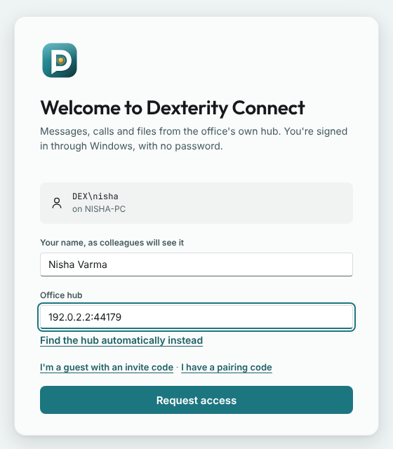
Fig. 2-1 First start: the welcome screen
The first time it opens, the app shows Welcome to Dexterity Connect (Fig. 2-1).
Check the Windows account shown at the top (for example DEX\priya). This is how the office knows you; there is no password.
Under Your name, as colleagues will see it, type your name as it should appear, for example Priya Raman.
Under Office hub, the app looks for the hub on the network and lists it with a SECURE tag. Click it. If it is not found, click Enter the hub address yourself and type the address IT gives you (as in the figure); Find the hub automatically instead goes back.
Click Request access.
Two other ways in, on the same screen: I'm a guest with an invite code (for consultants and client engineers given a code, section 19.1 Guests) and I have a pairing code (to add your own laptop, section 2.4).
2.3 Wait for approval
Every new PC or phone must be approved once by an administrator. Until then the app shows
Waiting for an administrator (Fig. 2-2) with your device code, two groups of four characters.
Tell an administrator you are waiting (in person or by phone).
Read out your device code. The administrator sees the same code in Control room → Approvals and checks it matches before clicking Approve.
The screen moves on by itself once you are approved, and Pulse opens. (Choose a different hub goes back if you picked the wrong one.)
The first person to join a new hub becomes its owner and is approved straight away (section 19.4).
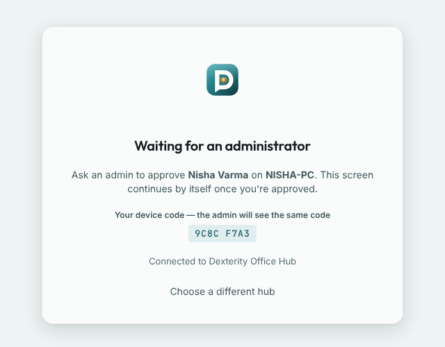
Fig. 2-2 Waiting for an administrator, with the device code to read out
2.4 Add your own phone or laptop
Once your office PC is approved, you can add your own phone or laptop yourself, without an administrator, from
Preferences → Your devices (open Preferences with Ctrl + ,).
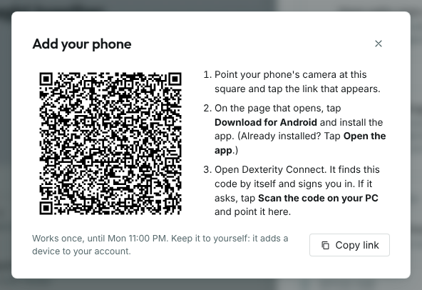
Fig. 2-3Add my phone: point the phone's camera at the square
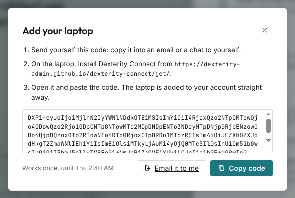
Fig. 2-4Add my laptop: a code to send to yourself
Add my phone shows a QR code. Point the phone's camera at it and tap the link that appears; the page offers Download for Android, or Open the app if it is already installed. The app finds the code by itself and signs you in. If it asks, tap Scan the code on your PC.
Add my laptop shows a code that starts with DXP1-. Click Copy code (or Email it to me), install Dexterity Connect on the laptop, open it and paste the code. A laptop with a camera can scan the QR code instead.
A code works once, for 24 hours, and only for you. The device joins as you, already approved. Your other devices are told at once (A device was added to your account), and the new device is listed under Your devices, where Remove signs it out. Keep codes to yourself: anyone who has your code before you use it can add a device to your account.
3 The window at a glance
Fig. 3-1 The main window, with Pulse open
Area
Purpose
Title bar, left
The Dexterity Connect mark and name.
Lens bar
The eight lenses (table below). A lens shows an amber count when something needs you there (a callout, an approval, a notice to acknowledge), and a small tick when there is only something unread. Ctrl + 1 … 8 switches lenses. When the window is too narrow for everything in the title bar, the lenses first move closer together, then show only their icons (point at one for its name), and at the very narrowest only the logo and the connection dot stay.
GO TO
The field at the end of the lens bar (Ctrl + G): type a few letters to jump to a person, a conversation or a command (section 3.2).
Hub status
The office hub's name with a dot: teal when connected, amber while reconnecting. A globe shows when you are connected from outside the office through the gateway.
Your tile
Your initials. Click it for your day, your status, Help me, Preferences and (for administrators) the Control room (section 3.3). A thin teal arc round the tile traces your working day.
Nib
The tile with a drafting-pen nib, beside yours: Nib's tray, your day sheet and leave note (section 8).
Urgent banner
Under the title bar, only for an urgent notice (an IT outage, a safety alert): its number and title, Read and Dismiss (section 11.1). It takes its own row and pushes the page down, so it never covers what is under it.
3.1 The lenses
Lens
What it shows
Section
Pulse
Your start page: what needs you, the day's line, who is in, what is coming up.
4
Direct
Your Direct conversations, with the Switchboard on the left.
5
Spaces
Your Spaces and lounges, with the Switchboard on the left.
Your week, meetings, invitations and conference rooms.
9
Directory
People, the org chart and the floor plan (the office drawing), departments and the day log.
10
Meet
Start or join a meeting, your personal room, webinars, recordings and recent meetings with their recaps.
9
Notices
The notice board: policies, circulars, holidays and IT advisories, and the ones waiting for your acknowledgement.
11
Press G then a letter, outside a text box, to jump to a lens: P Pulse, D Direct,
S Spaces, K Desk, C Calendar, Y Directory, M Meet, N Notices.
3.2 GO TO
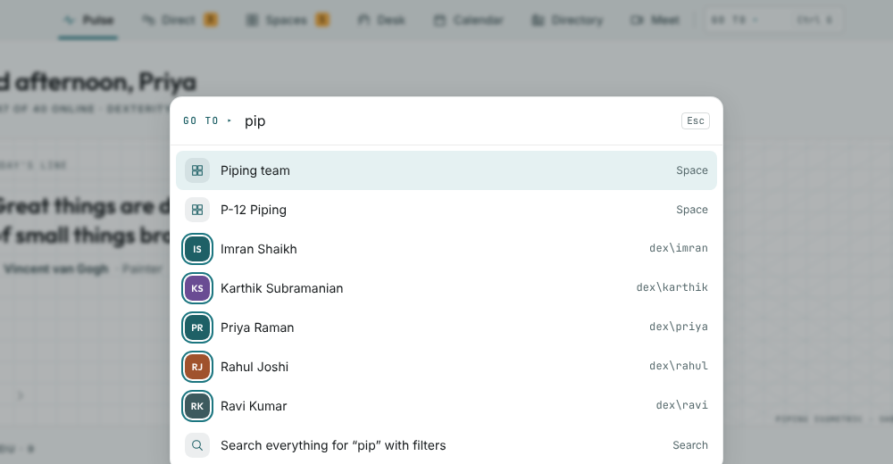
Fig. 3-2 GO TO: pip finds the Piping Spaces and colleagues
Click GO TO or press Ctrl + G, and type. The list shows Spaces, Direct conversations,
people (with their Windows account) and commands such as Create a Space, Open Preferences,
Keyboard shortcuts, Check for updates or Help me. Use the arrow keys and Enter, or click.
The last line, Search everything for "…" with filters, opens Search with what you typed (section 5.12).
3.3 Your tile: your day and your status
Click your tile at the top right (Fig. 3-3).
Day and Where today
Your working day. Choose where you are today (Office, Home, Site or Client) and click Start my day. During the day the same place offers Step out (and Back at desk) and Close my day; you can change where you are at any time. Colleagues see who is working, and where, on Pulse and in the Directory; your hours appear in your timesheet on the Desk. A day you forget to end closes at your last activity.
Show me as
At my desk (notifications on), Heads-down (focused; notifications still on), No interruptions (no notifications or sounds) and Unlisted (you appear offline). After choosing one, pick how long: Till lunch, Till the office's closing time, Rest of today or Until I change it. The app also shows you as away when you are idle or lock the screen, and in a meeting during a Calendar meeting.
Away from the office…
For leave and site visits: the date you are Back on, a note, and who to contact for anything urgent. Colleagues see it on your profile and when they write to you, with an automatic reply.
Help me…
Ask IT for help (section 14).
Preferences, Keyboard shortcuts
Section 15 and section 20.
Control room
Administrators only (section 19).
Check for updates
Looks for a new version now (section 15.6).
Offices
The office you are in; Join another office… adds a second hub on the same device.
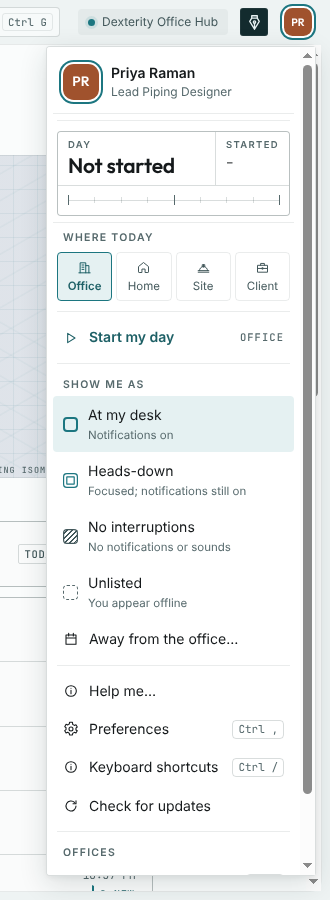
Fig. 3-3 Your tile's menu
3.4 Light and dark
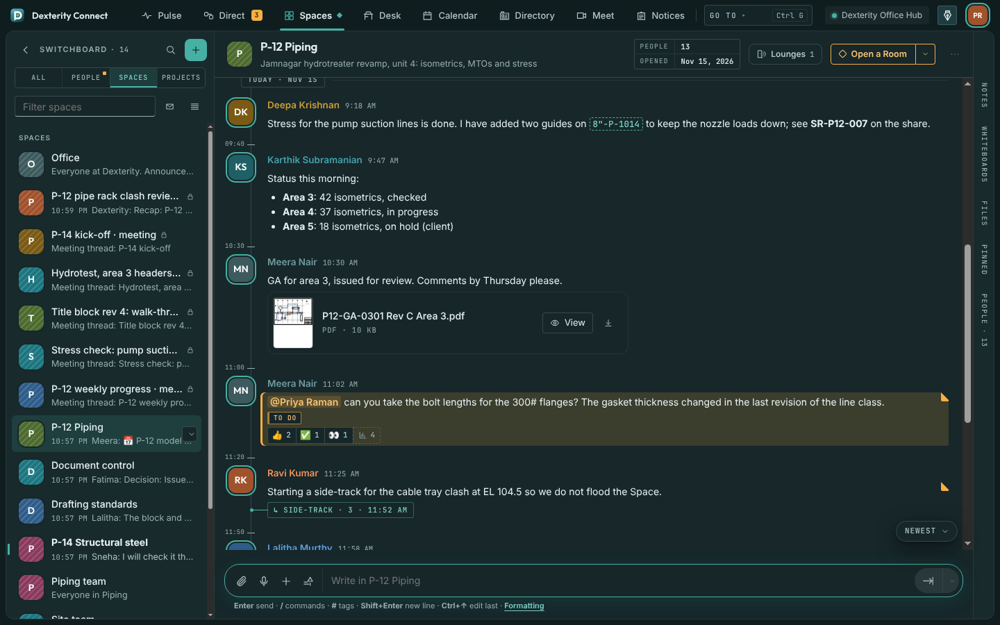
Fig. 3-4 The dark theme
Dexterity Connect follows the Windows (or macOS) light or dark setting. To choose yourself, open
Preferences → Appearance → Theme and pick System, Light or Dark.
In the same place: Density (Comfortable or Compact, which fits more on screen), how
Messages drawn as (Spine or Cards), Time format and Text size.
Ctrl + = and Ctrl + - change the text size at any time; Ctrl + 0 resets it.
4 Pulse
Pulse is where the app opens. It answers two questions: what needs me now, and what is the office doing today.
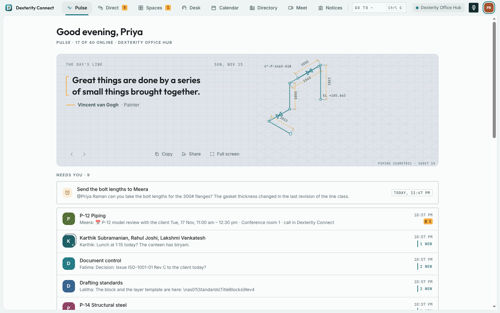
Fig. 4-1 Pulse: the greeting, the day's line and Needs you
Part
What it shows and does
Greeting
Good morning / afternoon / evening and your first name; below it how many colleagues are online and the hub's name.
The day's line
One line a day for the whole office, beside a technical drawing that draws itself in like a pen plotter. Copy, Share (into a conversation) and Full screen; the arrows step through earlier days. Administrators can add the office's own lines (section 19.1).
Needs you
Notices waiting for your acknowledgement first (ACKNOWLEDGE, section 11), then reminders due today (with their time), then conversations with callouts (an amber @ 1) or unread messages (1 NEW), newest first. Click one to open it.
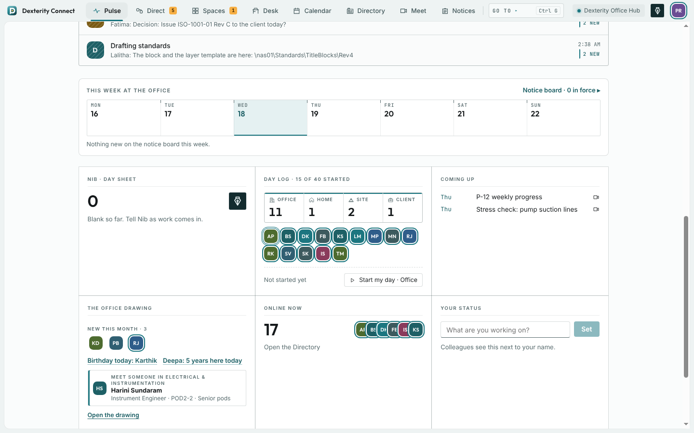
Fig. 4-2 Further down: the office cards
Card
What it shows and does
This week at the office
The notice board's front page: the seven days of the week, with holidays and office events on their day, and the notices issued this week. Notice board · … in force opens the board (section 11.1).
Day log
How many colleagues have started their day, by place (Office, Home, Site, Client), with their tiles, and your own day with a Start my day button.
Coming up
Your meetings today and tomorrow; a camera mark means it is held as a call. A meeting about to start shows a Join card.
The office drawing
New colleagues this month, birthdays and work anniversaries today, and Meet someone in …, a colleague from another department. Open the drawing opens the org chart at them (section 10).
Online now
Who is online; Open the Directory.
Your status
A line colleagues see next to your name (Checking P-12 isometrics). Type it and click Set.
Office hub
The hub you are connected to and its address, with ENCRYPTED CONNECTION and WORKS WITHOUT INTERNET.
Tools that integrate with Dexterity Connect (Hopper, Dexterity Sheets and others) can add cards of their own to Pulse.
5 Messages
Conversations come in two kinds. A Direct conversation is private, with one colleague or a small
group, and end-to-end encrypted. A Space is for a job, a team or a topic; an open Space can be found and joined
by anyone in the office, a private one only by the people added to it.
5.1 The Switchboard
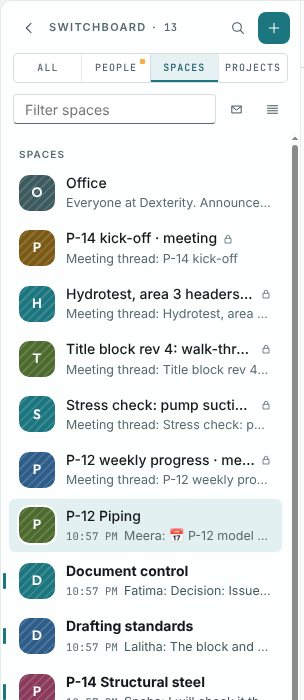
Fig. 5-1 The Switchboard on the Spaces lens
The Direct and Spaces lenses share one list on the left, the Switchboard.
Part
What it does
Chips
All, People (Direct), Spaces and Projects. Projects are Spaces whose name or topic has a job number, such as P-12 or P-12513.
Filter
Type to narrow the list.
Show unread only
The envelope button beside the filter.
Sort
By Latest message, Unread first or Name.
+
New Space or New Direct conversation (section 6.1).
A row
Tile, name and the last message. Unread conversations have a bold name and a teal tick on the left edge; a callout to you adds an amber count.
Lounges
The lounges in your Spaces and who is in them (section 6.2).
Each row has a menu (hover and click the small arrow, or right-click): Lay it beside (open it next to the
conversation you are in), Keep on top, drawers of your own (New drawer… groups rows under a title you
choose), and Hush to mute it Till lunch, Till end of day, Until Monday or Until I turn it back on.
The ‹ at the top folds the Switchboard into a strip of tiles; drag its edge to make it wider.
Alt + ↑ / ↓ moves to the previous or next conversation.
5.2 Reading a conversation
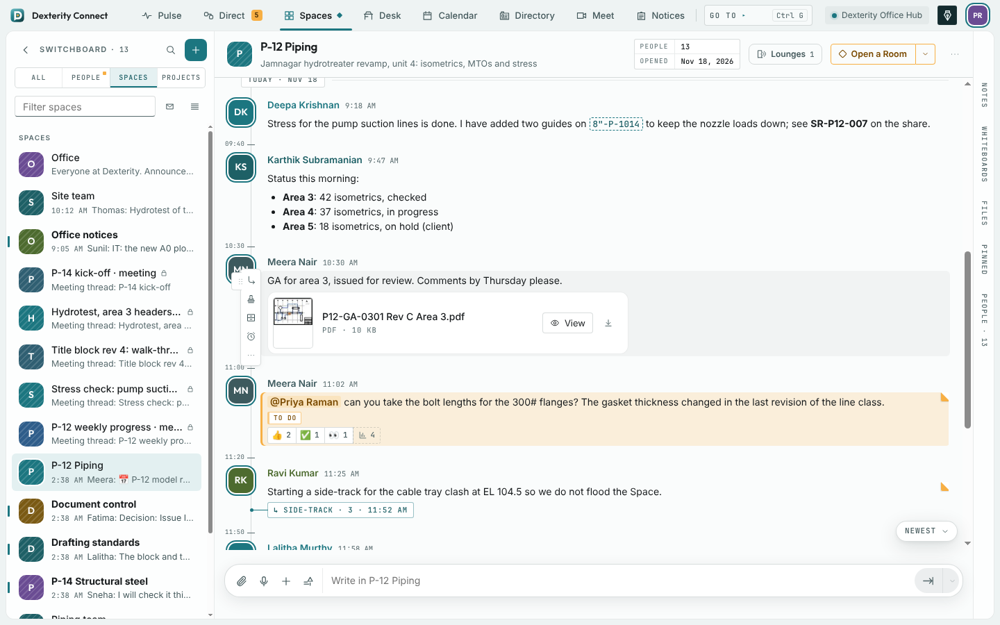
Fig. 5-2 A Space: the header, the timeline and the Dock
Part
What it shows and does
Header
The Space's tile, name and topic; PEOPLE and OPENED; Lounges; Open a Room (a call here; the arrow beside it offers With voice or With video); and More for this conversation (⋯): Plan a meeting, Add a tool…, Search this conversation, Jump to a date…, Automations… and Open in a new window.
Timeline
Messages hang off a thin rule (the spine), grouped by sender, with a time tick every few minutes and a label at each new day. Your own messages carry an amber notch on the spine. Callouts to you are tinted amber.
New line
When you come back, a line marked NEW sits above the first message you have not seen. Scrolled back, a NEWEST button takes you to the latest message and counts what arrived meanwhile. The app remembers where you were reading in each conversation.
Side tabs
On the right edge: Notes, Whiteboards, Files, Pinned and People for this conversation.
Dock
Where you write (section 5.3).
Hold Ctrl and click another conversation to lay it beside this one; up to three sit side by side.
Use ↑ and ↓ in the timeline to move from message to message with the keyboard.
5.3 Writing and formatting
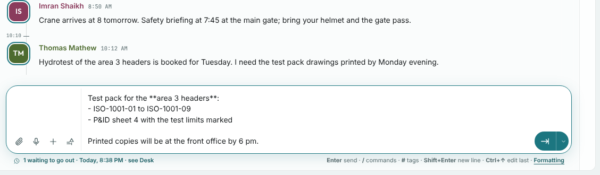
Fig. 5-3 Writing in the Dock: bold text and a list
Type in the Dock and press Enter to send; Shift + Enter starts a new line.
The line under the Dock is a reminder of the keys, and Formatting opens the full list.
To get
Type
bold
**bold** or Ctrl + B
italic
*italic* or Ctrl + I
underline, strike
Ctrl + U, Ctrl + 5
a link
Ctrl + K
code, a code block
`code`, or three back-ticks on the lines before and after
a list, a quote
start lines with - , or >
a callout
@ and a name; @everyone calls out the whole Space
a tag, a Space
# and a word (found by Search), or # and a Space's name
emoji
Ctrl + .
Line numbers such as 6"-P-1001-A1B or ISO-1001-01 are recognised and drawn as references.
Ctrl + ↑ edits your last message. Drafts are kept per conversation.
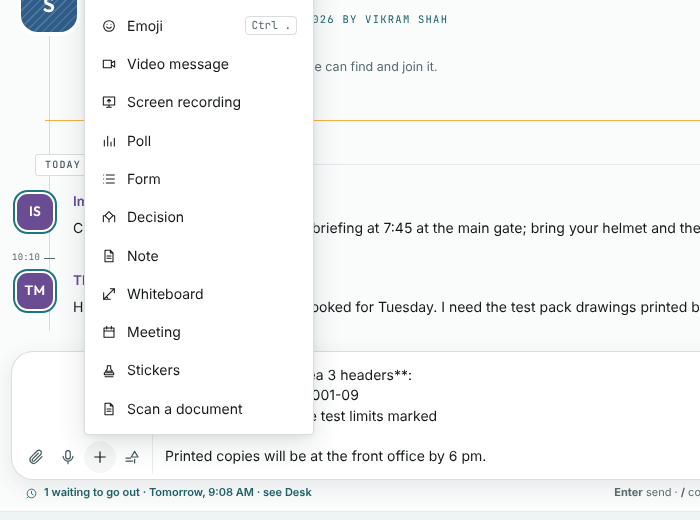
Fig. 5-4Insert (the + in the Dock)
The buttons at the left of the Dock: Attach (the paperclip; or drop files on the conversation, or paste),
Record a voice note (in Spaces), Insert and Restyle. Insert (Fig. 5-4) adds an Emoji, a
Video message or Screen recording, a Poll, a Form, a Decision, a Note, a Whiteboard,
a Meeting, Stickers, or Scan a document (a straightened PDF from your camera). Restyle rewrites your
draft as Concise, Formal, Diplomatic, Explanatory or Technical on your own PC; you accept or reject each change.
Slash commands
Type / at the start of the Dock for commands. The most useful:
Command
What it does
/remind in 30m Call the client
Set a reminder (in 20m, in 2h, tomorrow, monday, at 5pm).
/poll Lunch? | Dosa | Biryani
Ask a question with choices.
/meet, /call, /video
Plan a meeting with the people here; open a Room with voice; with video.
/schedule
Send what you are writing later (section 5.10).
/status At the site till 3
Set (or clear) your status message.
/here, /headsdown, /quiet, /unlisted
Show me as at my desk, heads-down, no interruptions, unlisted.
/startday site, /stepout, /endday
Start your day (office, home, site or client), step out or come back, close your day.
/got, /done, /wrap, /leave
Your day sheet and Nib's leave note (section 8.3, 8.8).
/leave-request
Ask your approver for leave (Front Office's Leave request: the request goes to their Desk). To tell everyone you are away, use /leave.
/action Ravi to send the GA by Fri
Log an action point in a meeting's thread (section 9.7). AP: and → at the start of a line do the same.
/help
List the commands, including those added by office tools.
5.4 Files and the PDF viewer
Files up to the office limit (1 GB unless your administrator changed it) are stored once on the hub. Pictures show in
the timeline and open in a viewer. Word, Excel and PowerPoint files show as a card with Open in the default app
and Download. Voice notes, video messages and screen recordings play in place. A PDF shows its first page, its size
and page count, with View and a download button. Every file shared in a conversation is listed under its Files tab.
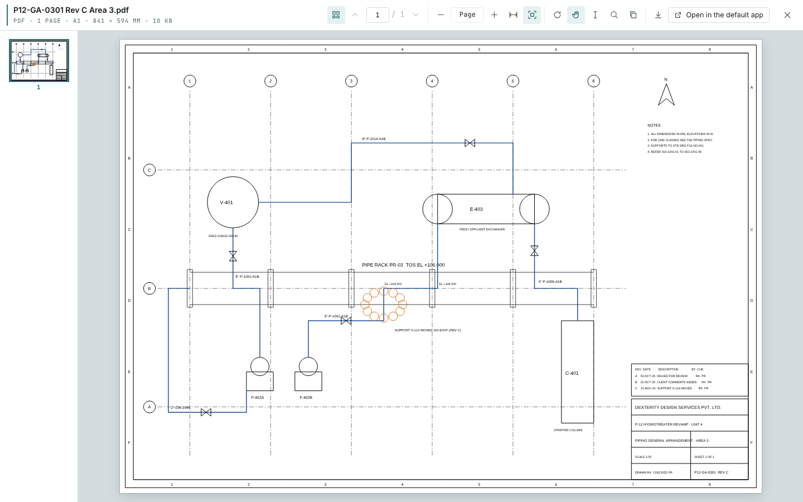
Fig. 5-5 The PDF viewer showing an A1 GA drawing
Control
What it does
Page strip
A thumbnail of each page (Page strip, S); click one to go there. The arrows and the page box go to a page.
Zoom
Zoom out and Zoom in, Fit page (F) and Fit width (W), from 25% to 800%. Ctrl + mouse wheel zooms where the pointer is; on a touch screen, pinch. Large A0 and A1 sheets are drawn in tiles at screen resolution, so they stay sharp and quick.
Pan, Select text
Drag the sheet with Pan; switch to Select text to select text, and Copy text copies the selection (or the whole page).
Rotate, Find
Rotate a quarter turn; Find in this PDF (Ctrl + F) highlights every match.
Download, Open in the default app
Save the file, or open it in your usual PDF program.
A password-protected PDF asks for its password. Esc closes the viewer.
5.5 A message's tools
Point at a message (or move to it with the arrow keys) and a column of tools appears on the spine beside it:
Side-track
Reply in a side-track (section 5.6).
Stamp
React with one of the stamps you keep on hand (Fig. 5-6), or + for any emoji. Choose your four stamps in Preferences → Stamps on hand.
Keep on my Desk
Keep the message on your Desk, as Kept, To do, Important, Follow up or Reference. A kept message shows a small amber corner.
Remind me
A reminder about this message, for you or a colleague who can see it.
More
Everything else (Fig. 5-7).
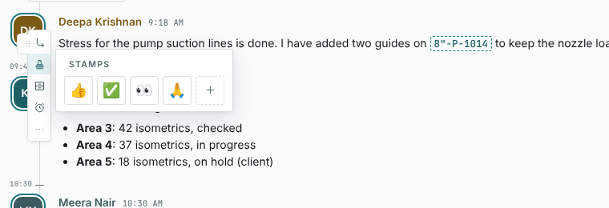
Fig. 5-6 The tools on the spine, with the Stamp flyout
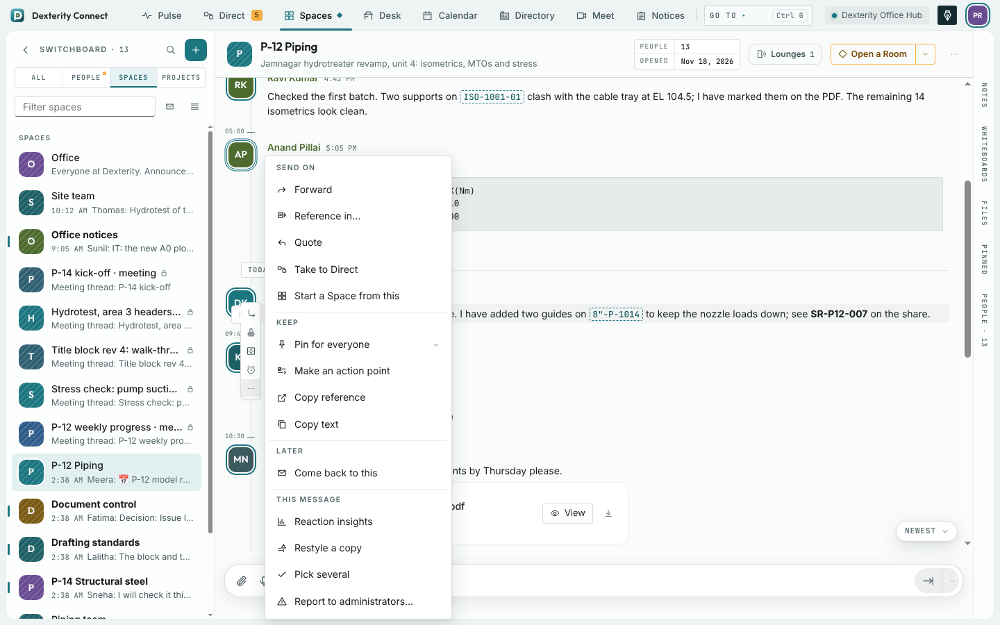
Fig. 5-7 A message's More menu
Entry
What it does
Forward
Send a copy, with credit to the writer, to up to 25 conversations.
Reference in…
Point to this message from another conversation without copying it: people there see it only if they can open the original. You can also drag the message (or a file) onto another conversation.
Quote, Take to Direct
Quote it in your reply; or answer the writer privately.
Start a Space from this
A new Space that begins with this message and its side-track.
Pin for everyone
Pin it at the top of the conversation, for a time you choose or until unpinned. Pins are listed under the Pinned tab.
Copy reference, Copy text
Copy a link to the message (it shows as a card wherever it is pasted in the app), or its text.
Come back to this
Marks the conversation unread from this message.
Who has seen it
Who has seen your message (for your own messages).
Reaction insights
Who stamped what, and when, by department, with charts. Stamps are not approvals.
Restyle a copy
A restyled copy of someone else's message, for you only.
Pick several
Select messages to forward, copy, save or delete together.
Edit, Delete
Your own messages (within the office's edit window). Deleting asks first.
Report to administrators…
Send the message to the administrators for review.
5.6 Side-tracks
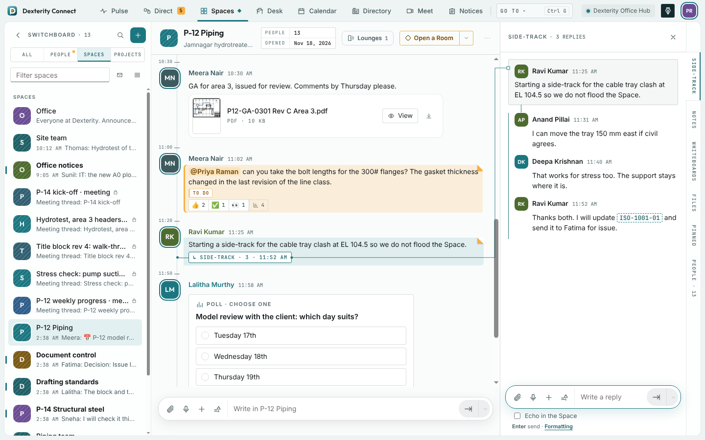
Fig. 5-8 A side-track about the cable tray clash
A side-track keeps a discussion about one message off the main timeline. The message shows
SIDE-TRACK · 3 · 11:52 AM (how many replies and the latest); click it to open the side-track
beside the conversation. Write in its own Dock; tick Echo in the Space to post your reply in the main timeline
too. Side-tracks you took part in are listed on the Desk, and replies to them reach you as callouts. Esc closes it.
5.7 Polls and Decisions
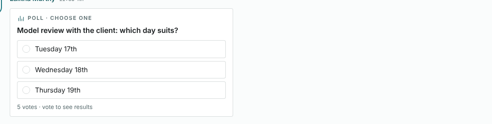
Fig. 5-9 A poll
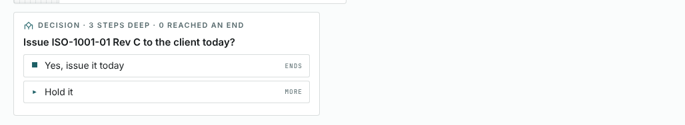
Fig. 5-10 A Decision
A Poll (Insert → Poll, or /poll) asks a question with choices: one or several answers,
anonymous if you like, with a closing time. Results show once you vote.
A Decision (Insert → Decision) is a question whose options either end it or lead to a follow-up
question, up to four steps deep; the last step can ask for a written answer. Each person walks their own path. The
person who asked sees a results sheet and can export it as CSV, and an automation can act on each answer (section 13).
Use it for small yes / no / why questions such as Issue ISO-1001-01 Rev C to the client today?
5.8 Link cards
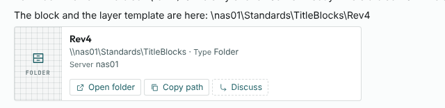
Fig. 5-11 A card for a share path
Links in a message get a card underneath: office links, links from office tools (Project Opener, Sleuth, Datum,
Dexterity Sheets), share paths such as \\nas01\Standards, meetings and web pages. The card offers what fits:
Open folder, Copy path, Open, Join, or open in the tool; Discuss starts a side-track about it.
Web page titles are fetched by the hub, never by your PC. A link you cannot open shows a quiet "no access" note. The
writer can remove a card. Paths on the office share are described in section 5.9.
5.9 Share paths and drive letters
One person maps \\nas01\Project as X:, another as Z:, a third maps nothing. Dexterity
Connect makes a path in a message work for all of them:
Stored as the share path, shown with your letter. When you send X:\P12513\Iso and X: is a network
drive on your PC, the message is stored with the share path, \\nas01\Project\P12513\Iso. Everyone then sees it with
their own letter for that share (Z:\P12513\Iso for a colleague who uses Z:), or as the share path if they
have no letter for it. You still see what you typed, and editing the message shows your letters again. Point at a path to see
its share path. Paths inside `code` are left as written.
The card. A path gets a card (Fig. 5-12): the file or folder's name, where it is, and the share path. Open (for
drawings, sheets, documents, pictures and archives, never programs) and Open folder open it on your PC. Copy path
copies it as you see it, with your letter; the arrow beside it has Copy UNC path, the share path that works for everyone.
Only on one PC. A path on a drive that is not a network share, such as C:\Users\…, is sent as written.
Your card says Only on this PC: others cannot open it; colleagues see Only on Priya Raman's PC and only Copy path.
No access. The app checks the path quietly once the card is on screen. If you cannot reach it, the card's third line says
You don't have access to this file (or folder), The file server isn't reachable from here, or Not found from
this PC, and Open and Open folder are left out.
Older messages. Messages written before this change keep their drive letters. Where the app knows the writer's drives, it
shows the path with your letter; where it does not, the path is shown as written, dotted, with May be mapped differently on your PC.
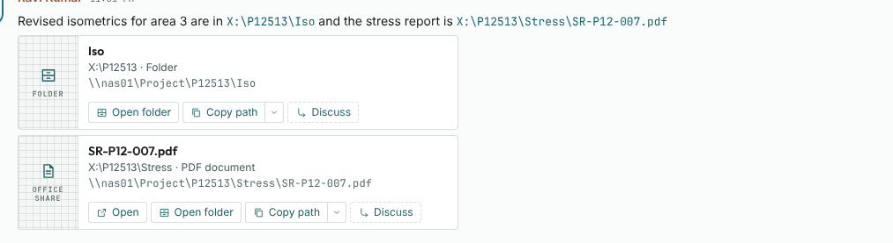
Fig. 5-12 Ravi wrote share paths; Priya, who maps the share as X:, sees her own letter
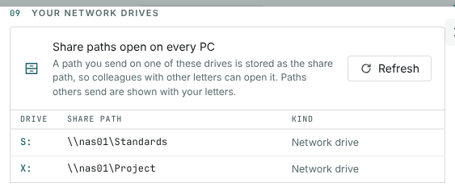
Fig. 5-13Preferences → Your network drives
Preferences → Your network drives (Fig. 5-13) lists this PC's drive letters (Drive, Share path, Kind).
The app reads them from Windows when it starts and when you come back to its window; Refresh reads them again at once, for
example after you map a new drive. On a Mac there are no drive letters: share paths are shown as \\server\share.
5.10 Sending later
Write the message, then click the arrow beside Send (More ways to send) and choose Send later…,
or press Ctrl + Shift + Enter. Pick Before I leave, Tomorrow, first thing, or a date and
time, and click Send at this time.
The office hub sends it at that time, even if your PC is switched off. A line under the Dock says how many
messages are waiting; they are listed on the Desk under Waiting to send, where you can send one now, change its time
or text, or cancel it (section 7).
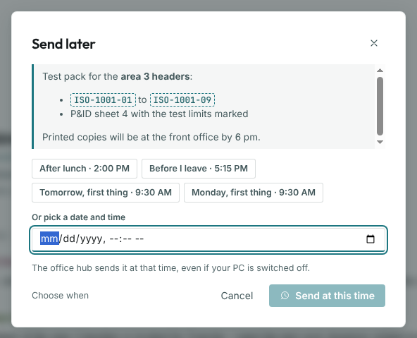
Fig. 5-14Send later
5.11 Direct conversations
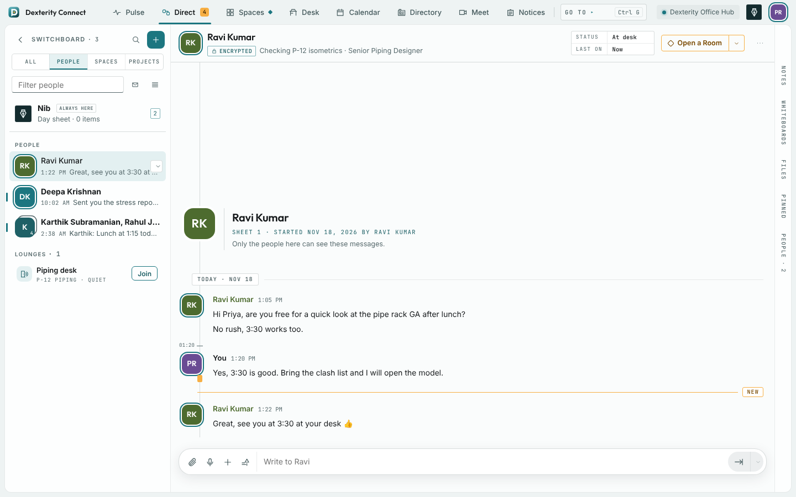
Fig. 5-15 A Direct conversation, end-to-end encrypted
Start one with + on the People chip, with Write to … on someone's Directory card, or from GO TO.
Add more people for a small group. The header shows ENCRYPTED, the person's status and title, and
when they were last on. Everything in sections 5.3 to 5.10 works the same here. If someone in the conversation is on an
older version of the app that cannot encrypt, a line above the Dock says so (section 18).
5.12 Search
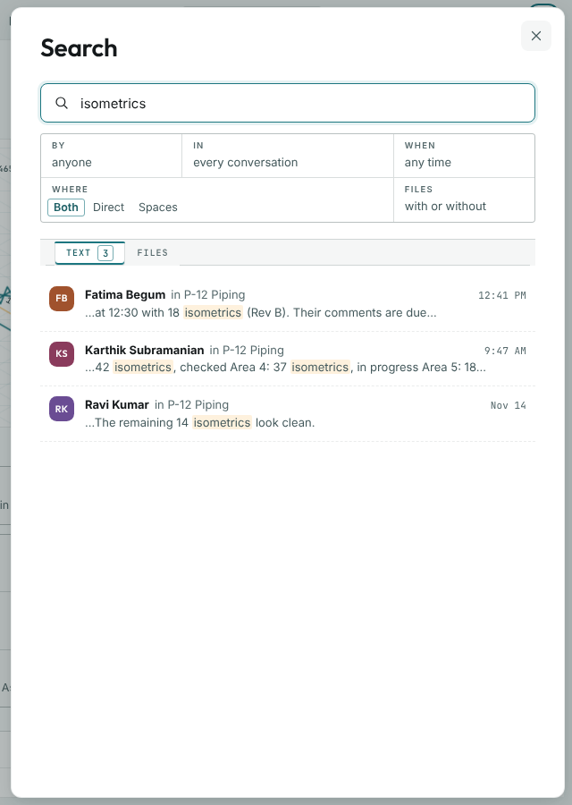
Fig. 5-16 Search, with its filters
Press Ctrl + Shift + F (or choose Search this conversation in a conversation's
⋯ menu) and type. Narrow it with the filters: BY (a person), IN (a conversation), WHEN,
WHERE (Both, Direct or Spaces) and FILES. The TEXT and FILES tabs split the results;
click one to jump to the message.
Text in pictures shared in Spaces is found too (read on the sender's PC).
Encrypted Direct messages are searched on your own device, from an index that is itself encrypted; such hits are marked from this device. Hindi and Tamil work.
#tag finds messages with that tag exactly.
6 Spaces and lounges
6.1 Creating and joining a Space
On the Spaces lens, click + (New Space) at the top of the Switchboard, or choose Create a Space in GO TO.
Give it a Name. For a job, start with the job number (P-12513 Piping) so it also appears under Projects.
Add What is it for? (optional), the topic shown under the name.
Switch on Private if only the people you add should find or read it. Leave it off for an open Space that anyone in the office can find and join.
Click Next: add people, choose the people, and create it.
To find open Spaces, use Find Spaces to join (the magnifier at the top of the Switchboard). The person who started
a Space and its moderators can rename it, change the topic, add and remove people and archive it; anyone can leave.
New colleagues are added to the office's default Spaces automatically.
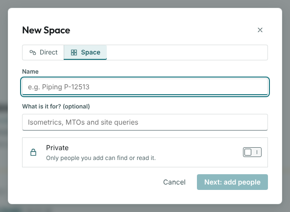
Fig. 6-1New Space
Tip. Keep one Space per job and discipline (P-12 Piping, P-14 Structural steel), one for the
site, and use side-tracks for each problem. Pin the documents everyone needs, such as the latest MTO.
6.2 Lounges
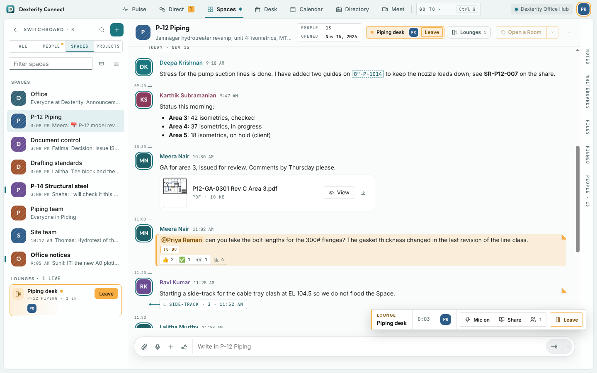
Fig. 6-2 In the Piping desk lounge
A lounge is a standing voice Room inside a Space, for a team that likes to talk while it works. Nobody is rung:
people drop in and out. Lounges are listed in the Switchboard (with who is in them) and under Lounges in the Space's
header, where New lounge… opens one (for example Piping desk).
Click Join to drop in. A small bar shows the lounge, how long you have been in, Mic on, Share (your screen) and Leave.
Click Leave on the bar or on the lounge to go. A quiet lounge stays where it is for next time; the people who manage the Space can rename or archive it.
7 Desk
The Desk is your own drawer. Nobody else sees it.
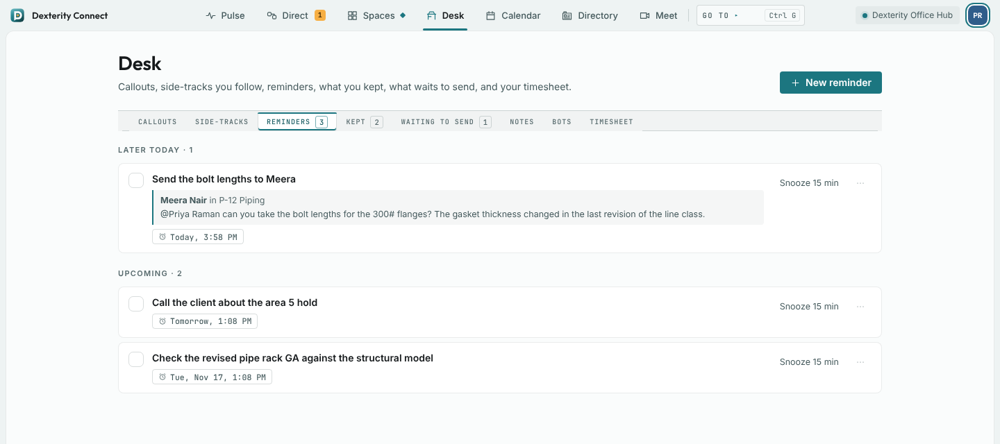
Fig. 7-1 The Desk, with its tabs, on Reminders
Tab
What it holds
Callouts
Messages that mention you, and replies in side-tracks you are part of. Filter by All, @ you or Side-track replies.
Side-tracks
Side-tracks you started or replied in, newest activity first.
Reminders
Grouped as Due, Later today, Upcoming and Set for others. Tick the box when done, Snooze 15 min, or use ⋯ to change or delete one (a deleted reminder can be brought back with Undo).
Kept
Messages you kept, filed as Kept, To do, Important, Follow up or Reference (Fig. 7-2). Action points given to you in a meeting arrive here as To do (section 9.7). Change the kind with the list beside each; Take off Desk removes it.
Waiting to send
Messages you scheduled (section 5.10): Send now, change the time, edit the text or cancel.
Notes
Your own notes. They save as you type.
Bots
Bots you made, and bots you can use (section 12).
Timesheet
Your working days: when you started, breaks, where, and when you finished.
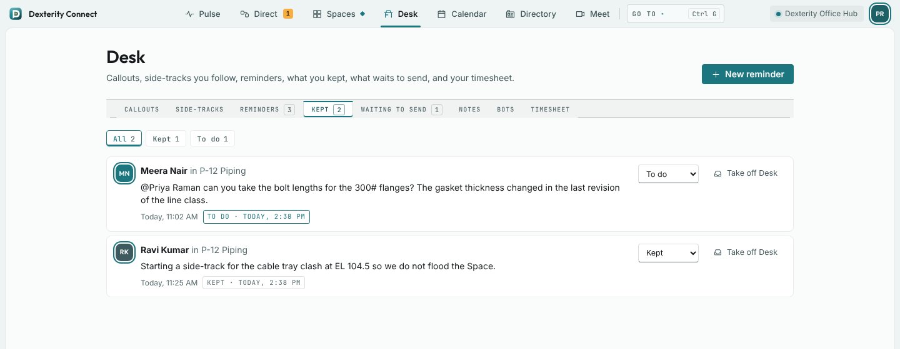
Fig. 7-2Kept: what you kept, by kind
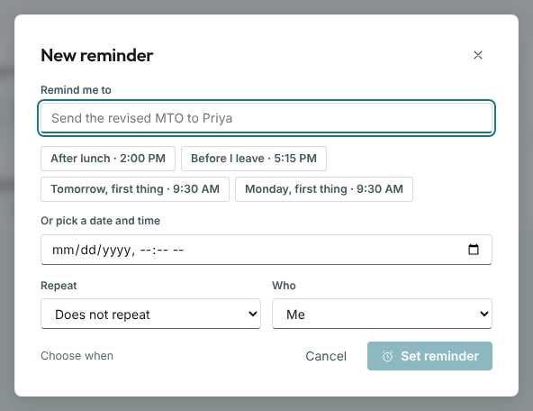
Fig. 7-3New reminder
7.1 Reminders
Click New reminder on the Desk, use Remind me on a message, or type /remind.
Write what to be reminded of under Remind me to.
Pick Before I leave, Tomorrow, first thing, or a date and time under Or pick a date and time.
Choose Repeat if it should come back (daily, on weekdays, weekly, monthly) and Who it is for: Me or a colleague.
Click Set reminder.
When it is due, a reminder card appears at the side of the window, with Done, a snooze and Dismiss, and a
notification rings even if notifications are otherwise off. A reminder about a message opens that message.
8 Nib, your office companion
Nib is the office's own bot, named after the nib of a drafting pen. Everyone has it from the first day, and it
cannot be removed. It does three jobs: it keeps your day sheet (who gave you work today and what you did with it), it
sets up your leave in one short note, and it answers everyday questions (your next meeting, who is in, where a drawing is).
What Nib reads. Nib reads only its own conversation with you and what you type in its tray. It never
reads your Direct conversations with colleagues: those are end-to-end encrypted, and the hub cannot open them. The offer under a
message (section 8.3) is worked out by the app on your own PC.
8.1 Where Nib lives
The tile and its ink drop
Nib's tile sits in the title bar, beside your own. When Nib wants something, an ink drop
shows at the tip of the nib: a hollow teal drop when there is something quiet to look at, a solid amber drop when it needs you.
The tray
Click the tile to open Nib's tray (Fig. 8-1). At the top is Nib's box, where you write in plain words. Below
it: 01 Today's sheet with your items, Wrap up and send and Add who gave me work, then 02 Ask Nib with
Nib's skills. Our conversation at the foot opens your conversation with Nib. Esc closes the tray.
The callout
Twice a day Nib starts the talk itself: at the start of your day and at wrap-up. It does this with a small
card under its tile, never a dialog in your way. Work carries on around it, and Esc or the × (Not now) closes it.
Nib's conversation
Nib's row stays at the top of the Switchboard, marked ALWAYS HERE. Its cards
arrive there (lead cards, registers, leave notices), and you can write to Nib there as to anyone. The header shows a
BOT tag, Your office companion, and the cells Your sheet (how many items) and Wrap-up
(your wrap-up time).
From anywhere
Press Ctrl + Alt + N in any Windows program, or choose Tell Nib…
in the menu of the Dexterity Connect icon in the notification area: the app comes forward with Nib's box ready. In any Dock,
/nib does the same.
On Pulse
The Nib · Day sheet card shows how many items are on your sheet and one line about your day. Click it to open the tray.
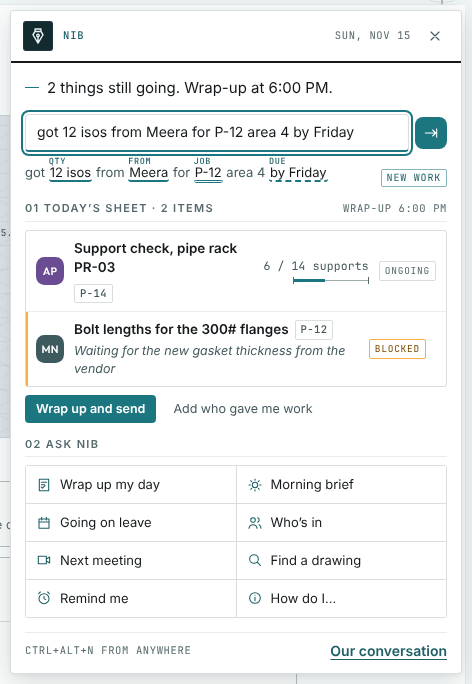
Fig. 8-1 Nib's tray. The words Nib understood are marked like dimensions on a drawing.
8.2 Day sheets: who gave you work
A day sheet is the list of what you were given today and what you did with it. Your leads receive it at wrap-up, and the
management sees the whole office in one register in the evening. Nobody has to chase anybody.
When you start your day (Start my day in your tile's menu, or /startday), Nib's callout asks
Who's given you work today? (Fig. 8-2). If you have not started your day by the office's start time (09:45 unless your
administrator changed it), the same card opens by itself.
Click everyone who gave you work. The tiles are the office's area, discipline and team leads, with their area or
discipline underneath; the people who gave you work in the last ten workdays come first and are marked USUAL.
Someone not listed? Click Someone else…: the tray opens with Anyone else, where you type a name. There you can
also give each person a job (For which job? (optional)) and a few words.
Click Log these.
Nothing yet means no work so far; Nib asks again at wrap-up. On leave today opens the leave note (section 8.8).
Carried over. Items you did not finish on your last working day come onto today's sheet by themselves, marked
CARRIED, so you never type the same work twice. If your last sheet was never sent, the card says so
and offers Send it now.
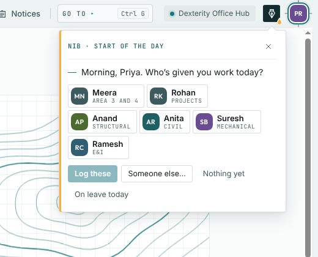
Fig. 8-2 The start of the day: who gave you work?
8.3 Writing work in plain words
Through the day, tell Nib what comes in and what you finish, as you would tell a colleague. Write in Nib's box, in your
conversation with Nib, or with a slash command in any Dock. As you type in the box, Nib marks the words it understood:
FROM (who gave it), JOB, QTY (how many, of what), DUE and STATE, with the kind of line on the right
(NEW WORK, DONE, PROGRESS, BLOCKED).
Press Enter to add it. Nib reads your words on your own PC.
You write
Nib puts on your sheet
got 12 isos from Meera for P-12 area 4
New work from Meera on P-12: 0 of 12 isos.
Ravi: check MTO for P-14, half day
New work from Ravi on P-14: Check MTO, 4 hours.
18 of 40 sheets P-12
Progress on the P-12 sheets: 18 of 40.
stress check 60% done
Progress: 60%.
Area 4 routing waiting for vendor data
Blocked, with vendor data as the reason.
GA check by Friday
Due on Friday.
Meera ne diya 8 isos P-12
New work from Meera on P-12: 8 isos.
12 iso ho gaye P-12 ke
Done: 12 isos on P-12.
Ravi se mila naya kaam: spool drawings
New work from Ravi: spool drawings.
support check baaki hai
Support check, still pending.
MTO kal tak
MTO, due tomorrow.
kuch nahi or nothing today
Nothing today: Nib stops asking for today.
Nib knows the office's job numbers, the usual units (sheets, isos, drawings, GAs, MTOs, lines, spools, supports, models,
mark-ups, hours and %), number words (twelve, a dozen) and small slips in names. Progress on something already on
your sheet updates that item instead of adding a second line. A line about leave (kal chutti) opens the leave note.
Slash commands
Command
What it does
/got 6 GAs from Anand for P-14
Puts work you were given on your day sheet.
/done 18 of 40 sheets P-12
Records progress on your day sheet.
/wrap
Opens the wrap-up: check and send your day sheet.
/sheet
Opens your day sheet in Nib's tray.
/leave tomorrow
Opens the leave note (section 8.8).
/nib who is in today
Asks Nib anything.
None of them posts a message in the conversation you typed them in.
"Add to my day sheet"
When a colleague writes to you in a Direct conversation, or calls you out with @ in a Space, and the message reads
like work for you (please check the GA for P-12 by Friday), a ruled strip appears under it: Add to my day sheet, with
the job, quantity and date Nib read. One click puts it on your sheet with the writer as the person who gave it; it then reads
On your day sheet. The × (Don't offer this one) hides it for good. The offer comes only for today's messages,
never for your own, and is worked out on your PC.
8.4 Numbers or words
Click an item in the tray to change it. Give its progress in numbers, in words, or both:
Numbers.Done with − and + (or type), of how many in all, and the unit. A bar shows how far it is. For a
percentage, a slider from 0 to 100%.
Words.In words: Area 4 routing nearly done, waiting for vendor data. Use words for work that does not
count in sheets, such as site queries or a model review.
State.Ongoing, Done or Blocked. Say what a blocked item is waiting for.
The editor also has Activity and Job, Save, Cancel and Remove.
8.5 The wrap-up
At your wrap-up time (18:00 unless your administrator changed it) Nib offers your sheet, already filled in with everything
it knows. Open it with Check and send on the callout, Wrap up and send in the tray, Wrap up my day, or
/wrap (Fig. 8-3).
For each item, correct the numbers, choose Ongoing, Done or Blocked, and add words if you like.
Under Anything else? One per line, add what you did that is not on the sheet yet; Nib reads each line like its box.
Add A note for your leads and Blockers if there are any.
Click the button that names who receives it, for example Send to Anand and Meera.
Each person who gave you work receives only the items they gave. After sending you can still change your sheet:
Change what I sent in the tray. Your leads' cards follow, marked CHANGED. When a lead marks
your sheet as seen, your tray shows Meera saw it.
When it is not a good moment
In 30 min or After my meeting on the wrap-up callout puts Nib off. A snooze is not counted as an ask.
Nothing today tells Nib there was no work to report; it stops asking for today. It is offered while your sheet has nothing new on it.
Your own wrap-up time. Under the wrap-up, click Ask me at 6:00 PM: change, pick a time and click Set.
Office time goes back to the office's time. Nib writes its times as you read them: 6:00 PM, or 18:00 if your
Time format is the 24-hour clock (section 15.2), here, in the Wrap-up cell of Nib's conversation and in its messages.
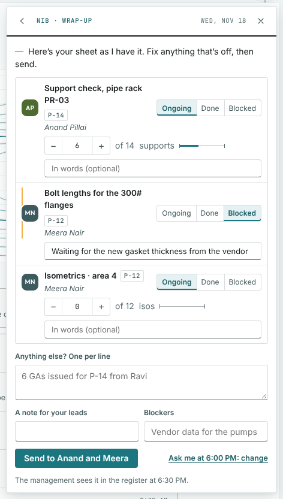
Fig. 8-3 The wrap-up, pre-filled. The button at the foot names who receives it.
Nib asks politely, and not often. At your wrap-up time a hollow ink drop appears on Nib's tile. About
25 minutes later the wrap-up callout opens, and Pulse shows a card. If the sheet is still not sent, Nib sends one message in its
conversation. That is all: never more than the office's limit a day, never twice within 20 minutes, never while you are in a
Room, in a meeting, on No interruptions or Heads-down, and never on leave or after Nothing today. Section 19.2 has the details.
8.6 For leads: the daily card
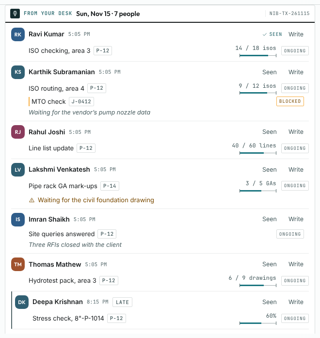
Fig. 8-4 Priya's card: everyone who sent work from her today, one row each
If you give people work, you receive one card a day in your conversation with Nib, the first time someone sends a
sheet with work from you. The card is live: later sheets fill it in place, and no other message is posted. It is drawn as a
transmittal: FROM YOUR DESK, the date and how many people (Fig. 8-4).
A row per person, with the time they sent and each item you gave them: the job, the numbers with a bar, or their
words, and its state (ONGOING, DONE or BLOCKED). Their note follows, and blockers in amber.
Seen marks one person's sheet as read; they see that you saw it. Seen all at the foot marks every row.
Write opens your Direct conversation with that person.
LATE marks a sheet that came in after the evening register; CHANGED one changed after it was sent.
At the foot: the totals per job and unit, and Waiting for: people who named you that morning and have not sent yet.
8.7 For management: the register
The management (named by the administrator) receives one daily register at the register time (19:00 unless changed),
as one card in their conversation with Nib: DAILY REGISTER and the date (Fig. 8-5). It is built for 40 to
200 people and is read from the top down:
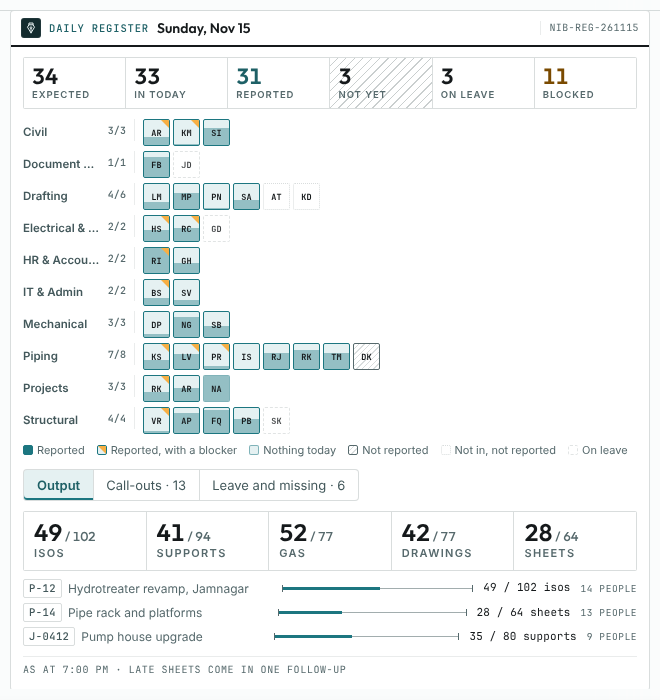
Fig. 8-5 The daily register, as Vikram reads it
Headline cells
Expected (everyone who keeps a day sheet, less those on leave), In today (who started their day),
Reported, Not yet (started their day but sent nothing, or not in and sent nothing), On leave and Blocked (people who reported something blocked).
The register
Everyone as a small square cell with their initials, a row per department with reported / expected
beside it, like a drawing register's sheet index. How full a cell is shows how much of the person's planned quantity is done.
Cell (the legend under the register)
Meaning
Reported
Solid teal: the day sheet came in.
Reported, with a blocker
Teal with an amber corner: the sheet came in, with something blocked.
Nothing today
Pale teal: they said there was no work to report.
Not reported
Hatched: they started their day but sent no sheet.
Not in, not reported
Paper: they did not start their day, and sent nothing.
On leave
Dashed: on leave through Nib's leave note.
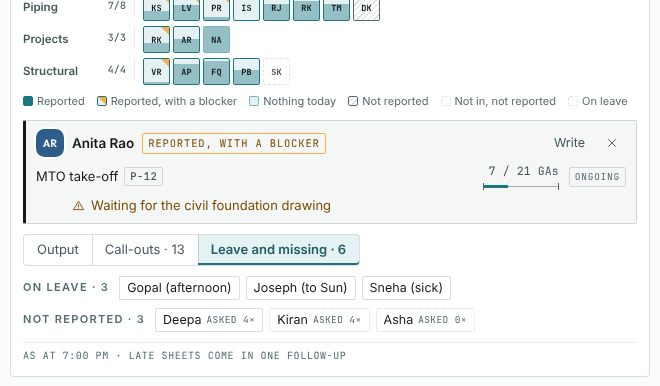
Fig. 8-6 One person's sheet, opened in the register
Click a cell (or use the arrow keys and Enter) to open that person's sheet in the card: their state, their
items with numbers or words, their note and blockers, and Write. For someone who did not report, it says how many times
Nib asked, and whether they were in meetings through the wrap-up.
Under the register, three panels:
Output: totals per unit in large figures, then one bar per job with done against planned and how many people worked on it.
Call-outs: BLOCKED items, PAST DUE items, NO PROGRESS on numbered work all day, and people with MANY GIVERS.
Leave and missing: who is on leave (and until when), and who has not reported, with how many times Nib asked (ASKED 3×).
The register is a snapshot taken when it was sent, so it reads the same tomorrow. It never contains one message per person:
leave is one grouped line. The follow-up: if any sheet comes in after the register, one follow-up card
(FOLLOW-UP) is sent at the follow-up time (21:00 unless changed) with only the late sheets and who is still
missing. No late sheets, no follow-up. The week: on the last workday of the week, THE WEEK card shows
reporting by day, everyone day by day, and each job's week with a bar per day.
8.8 The leave note
Going on leave takes one short note. Nib sets your away status, blocks your calendar, tells your leads and your cover,
answers people who write to you, and moves your Desk reminders.
Open it: Going on leave in Nib's tray, /leave (or /leave tomorrow) in any Dock, on leave
tomorrow to Nib, or On leave today on the start of the day card. (/leave-request is different: it asks your
approver for leave through Front Office, and points you back to this note once it is sent.)
When: Today, Tomorrow, Pick dates (First day and Last day) or Half day
(the Day, and Morning or Afternoon).
Kind: Annual leave, Sick leave or Comp-off.
Who covers: type a name and choose. Then write the handover for them in the box that appears.
Who to tell: your leads (today's and recent ones, and your manager) are already picked; click to leave someone out,
or add Someone else to tell. Your three busiest Spaces are offered too. Add A note for people who write to you (optional).
If Desk reminders fall in those days: Move to the day I'm back, Hand to my cover or Leave them.
Read What I'll do, then click Do it. (Not now leaves without changing anything.)
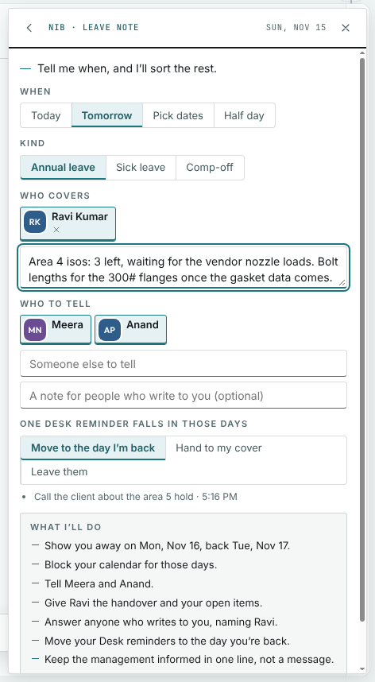
Fig. 8-7 The leave note, filled in for tomorrow
Who
What happens
You
Shown as away (from the first day, for leave that starts later), with your cover as the contact. Your calendar has an all-day block. Nib does not ask for day sheets while you are away. To undo it, open the leave note again: Cancel this leave (or Keep it).
Your leads
A small LEAVE card from Nib: who is away, when, and For anything urgent, ask …. Leads who are in the management see you in the register instead.
Your cover
A HANDOVER card: … is on leave, and you are covering, your handover note, and your open day-sheet items, each with Add to my day sheet; and Write to ….
Spaces you chose
One short AWAY line from Nib.
People who write to you
The away notice, naming your cover, once every 12 hours per conversation.
The management
One grouped line in the register, never a message for each person.
Welcome back. The first time you open the app on the day you are back, Nib's tray opens on Welcome back:
Conversations moved, Mentions of you and Reminders moved to today, the conversations to look at first, and
what your cover handed back. Today's brief and My day sheet carry on from there.
A bot made from the Leave note template (section 12.2) ends the same way: its last step hands the answers to Nib.
8.9 Nib's skills
Each skill is a button under 02 Ask Nib in the tray, and a phrase Nib understands in its box or conversation. Nib uses
only what you can see yourself: your own search, your calendar and the Directory.
Skill
Say, for example
What you get
Wrap up my day
wrap up
The wrap-up (section 8.5).
Morning brief
morning brief
Today's meetings, reminders due, what is on your sheet (with carried items), birthdays and work anniversaries near you, and the day's line. Five lines.
Going on leave
on leave tomorrow
The leave note (section 8.8).
Who's in
who's in today, who knows about P-12 stress
Who has started their day, and where; or who writes about a subject in Spaces you can see. Day sheets are never used for this.
Next meeting
my next meeting
Its time and place, with Join and Open in the calendar.
Find a drawing
where is the GA for P-12 area 4
Files and messages from your own search, newest first.
Remind me
remind me to send the GA to Ravi after lunch
A reminder on your Desk. Nib knows after lunch, end of day, tomorrow morning, kal, in 20 min, at 5; click Set reminder.
How do I…
how do I share my screen
Short steps that name the app's own buttons, sometimes with a button that takes you there (Open the Calendar, Open the Desk, Open Preferences). Nib knows: sharing your screen, starting a Room, planning a meeting, setting a reminder, sending a message later, keeping a message on your Desk, going on leave, starting or closing your day, making a bot, finding a message or a file, changing the language, quietening notifications, adding your phone, a quick poll and replying in a side-track.
A new colleague receives a WELCOME card on their first day: a five-stop tour with Show me
buttons, the people to meet, and See the office drawing.
9 Calendar and meetings
9.1 The Calendar
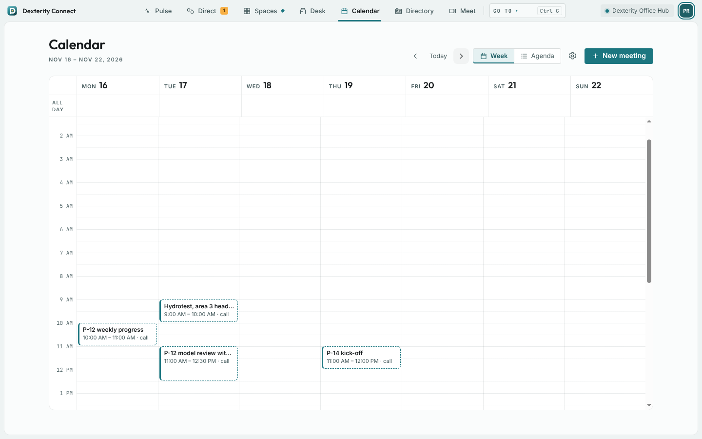
Fig. 9-1 The Calendar, Week view
The Calendar lens shows your week hour by hour (Week) or as a list (Agenda). ‹, Today and
› move between weeks; an amber line marks the time now. A meeting you have not answered has a dashed outline; Maybe is hatched and Not going struck through.
The gear (Calendar settings) sets the day Weeks start on (Monday, Sunday or Saturday) and a
second time zone to show beside your own (Also show times in), useful for clients abroad.
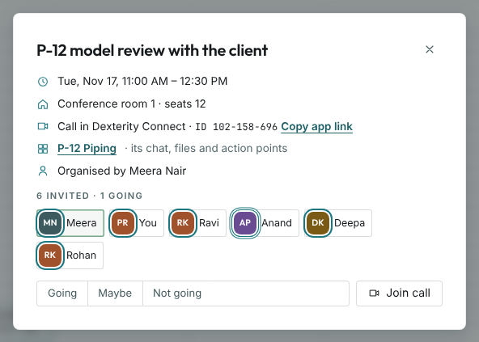
Fig. 9-2 A meeting: answer and join
Click a meeting to see it (Fig. 9-2): when, the conference room, the call's ID with Copy link, the conversation it
belongs to, the organiser, and who is invited with their replies. Answer with Going, Maybe or Not going.
Join call joins it; once it has been held, Open the recap opens its recap (section 9.9). The organiser also has Edit and Cancel meeting, and the meeting's page and invitation
for people outside the office: Copy invitation, Download invitation (.ics) and Send by email (section 9.11).
Before a meeting starts, a card offers Join call or Dismiss. While you are in a Calendar meeting,
colleagues see you as in a meeting.
9.2 Planning a meeting
Click New meeting on the Calendar, use Plan a meeting in a conversation's ⋯ menu, choose
Insert → Meeting, or type /meet.
Field
Notes
Title
What it is about.
Starts, Length
The start, and how long (the list shows when it ends).
Time zone
Your own, or another (a client's), for meetings set in another zone.
All day
For site visits and leave.
Hold it as a call in Dexterity Connect
On by default: the meeting gets its own ID and link, a lobby, and you as host.
Repeat, Reminder
A repeating meeting (with Until (optional)), and when to be reminded.
People
Who to invite. Their free and busy times show while you plan.
Conference room, Or a place
Book a conference room (a room cannot be booked twice for the same time), or type a place such as a client's office or a site.
Conversation
Tie the meeting to a Space or Direct conversation; it is announced there.
Agenda (optional)
Shown on the meeting's card.
Click Save. Invitations go to everyone you added.
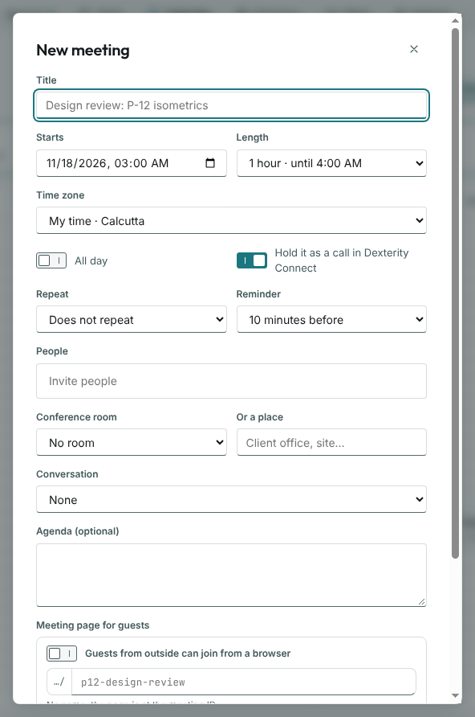
Fig. 9-3New meeting
9.3 The Meet lens
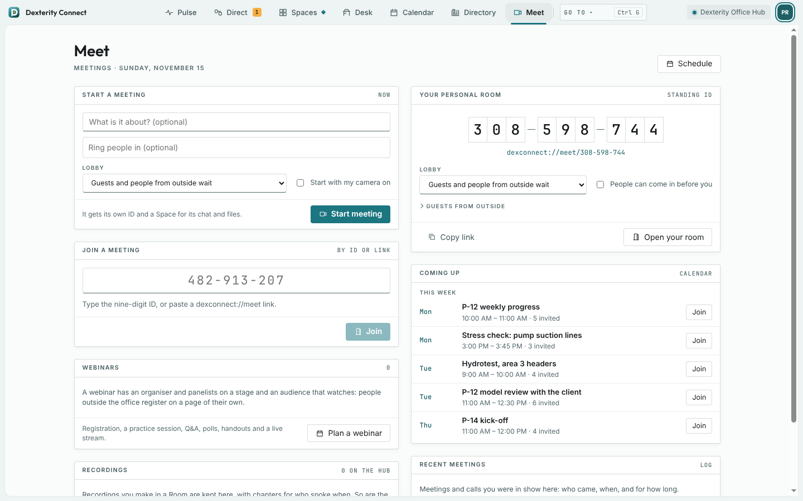
Fig. 9-4 The Meet lens
Panel
What it does
Start a meeting
A meeting now. Optionally say What is it about? and Ring people in; choose the Lobby rule (Guests and people from outside wait, Everyone waits to be let in or Only guests from a browser wait) and whether to Start with my camera on. Start meeting opens it, with its own ID and a Space for its chat and files.
Join a meeting
Type a nine-digit ID such as 482-913-207, or paste a dexconnect://meet link, and click Join.
Your personal room
Your standing meeting ID, the same every time. Set its lobby, whether People can come in before you, and Guests from outside (section 9.10); Copy link or Open your room.
Coming up
This week's meetings held as calls, each with Join.
Webinars
Webinars you can watch, and Plan a webinar (section 9.12).
Recordings
Recordings kept on the hub that you made or that were shared with you, with a viewer (section 9.5).
Recent meetings
Meetings and calls you were in: who came, when, and for how long. Recap opens its recap (section 9.9), Report (attendance, hands, polls, recordings, as CSV), Rejoin or Open its conversation.
9.4 In a Room
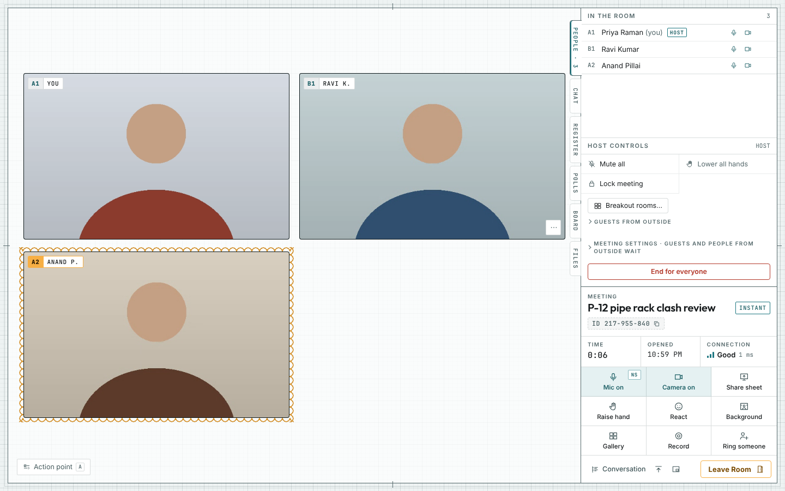
Fig. 9-5 A meeting with three people. The cameras show placeholder pictures in this demonstration.
A Room is any call: from Open a Room in a conversation, from a profile, from a meeting, or a lounge. When
someone rings you, a banner offers Join with video, Join with voice or Not now. Up to 8 people talk PC to
PC; larger meetings (up to 50) run through the hub's relay on the office network.
Control
What it does
Mic on, Camera on
Turn your microphone and camera on and off. The small NS tab on the mic switches strong noise suppression (on by default).
Share sheet
Share your screen or one window, picked from pictures of each. While you share a whole screen you can give a colleague control of it (Give control… in their person menu); they can also Ask for control. You allow it in a separate sheet, and Stop control or Ctrl + Alt + Shift + S ends it at once. Everyone can point at a shared screen with live pointers.
Raise hand, React
Hands are queued in order for the host; reactions float up your tile.
Background
As it is, Blur, an office background, or Your picture. Done on your PC.
Gallery
Gallery, speaker or presentation layout; pin someone for yourself.
Record
Record the meeting (if the office allows it). Everyone is told. The recording is kept on the hub with chapters for who spoke when, or saved on your PC.
Ring someone
Ring a colleague into the Room.
Side tabs
People (with mic and camera states), Chat, Register (the agenda and the action points, section 9.8), Polls, Board (a whiteboard) and Files, all on the meeting's thread (section 9.6).
Bottom line
Conversation opens the chat (the Room stays in the title bar); fold the Room into the title bar (Esc); float the video in a small window on top; Leave Room.
The title block in the corner shows the meeting's name, its kind (INSTANT, a scheduled meeting or a
personal room), its ID with a copy button, the time, when it opened and the Connection quality.
9.5 Hosting: lobby, controls, breakouts and recordings
Whoever starts a meeting is its host (for a Calendar meeting, the organiser). The host's panel has
Host controls: Mute all, Lower all hands, Lock meeting (no one new can come in), Breakout rooms…,
Guests from outside, Meeting settings and End for everyone. From each person's menu the host can mute them
(unmuting is only ever asked), make them a co-host, spotlight them for everyone, or remove them to the lobby. When every
host leaves, the person who has been there longest runs the meeting.
The lobby. People who must wait (by the lobby rule) appear under Lobby with Admit and Deny (or Deny all). Guests from a browser always wait.
Recordings. When a recording stops it is uploaded to the hub. Only the person who recorded it (and administrators) can watch it until it is shared with the meeting's conversation or by a link for the office. The Meet lens's Recordings shelf plays it, with the chapters as a list and a strip under the video.
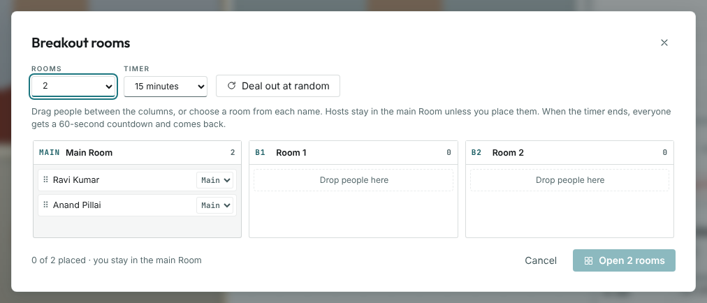
Fig. 9-6 Setting up Breakout rooms
Breakout rooms
Click Breakout rooms… (at least two other people must be in the Room).
Choose how many Rooms and a Timer.
Drag people between the columns, choose a room beside each name, or click Deal out at random. Hosts stay in the main Room unless placed.
Click Open … rooms. While they run, the host can send a note to every room, Visit any room, move people, and Call everyone back. Everyone gets a 60-second countdown before coming back, also when the timer ends.
9.6 The meeting's thread
Every meeting keeps everything from it in one conversation, its thread: the chat, the files, the action points, the
decisions and the recap. Everyone who was invited or came finds it there afterwards, so nothing has to be copied out of a call.
Meeting
Its thread
Planned in a conversation
That Space or Direct conversation.
Planned with no conversation
A private Space of its own, named after the meeting (P-12 pump skid weekly review · meeting), with everyone invited in it. It is made when the meeting is saved.
A Room opened in a conversation
That conversation.
An instant meeting, your personal room
Its own Space, as before.
A webinar
Its backstage Space, for the organisers and panelists.
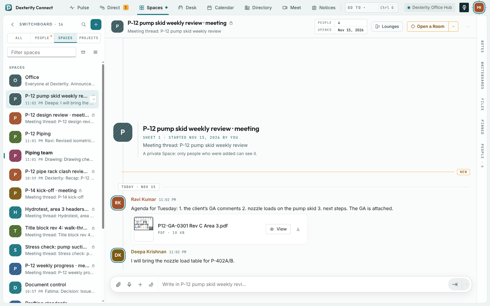
Fig. 9-7 Before the meeting: the agenda and the GA, shared in its thread
Where to find it. On the Spaces lens, under the meeting's name, or with Open on the meeting under Recent meetings on the Meet lens.
Before the meeting, write and share files in the thread as in any conversation: the agenda, the drawings to look at. In the Room, the
Chat and Files tabs show the same thread, so they are there when it starts.
A repeating meeting has one thread for the whole series. Each time it is held, a line MEETING STARTED
marks the start in the thread, and its recap card marks the end. A Room opened again within 15 minutes of the last one ending carries on the same meeting.
Who can come back to it. Everyone invited, and everyone let into an instant meeting or personal room. Someone you take off the invitation
before the meeting leaves its thread; after attending, they keep it. A colleague let in from outside a Space's meeting does not get the Space, but can
open the recap of the meeting they were in, which shows only what they saw there. Guests from a browser cannot come back; the organiser can send them the recap by email.
The meeting chat with guests is kept. When guests join from a browser, the Room's Chat has two sheets: Everyone here
(the meeting chat, which guests read and write) and Members only (the thread, which guests never see). Each line of the meeting chat is
saved in the thread as it is said, a guest's line with their name and a GUEST tag, so nothing is lost if the hub restarts.
Files a guest attaches are checked with the office's file rules and kept in the thread too.
The thread is a conversation like any other: search finds its messages and files, and the office's retention and legal holds apply to it.
9.7 Action points
An action point is a task logged in a meeting: a number (AP-03, counted per thread, so a series has one register), what needs
doing, an owner (a colleague, or someone from outside by name) and a due date. There are three ways to log one, and all three
end in the same card in the thread.
From the chat. Start a line with /action, /ap, AP:, Action:, → or ->,
in the Room's chat or in any thread's Dock, and write it as you would say it: /action Ravi to send the revised GA by Fri. As you type,
a card above the box shows what was read (Fig. 9-8): the task (Send the revised GA), the OWNER (Ravi Kumar) and the DUE date
(Friday). Change the owner or the date there if Nib's reading is wrong, then press Enter (ENTER LOGS IT).
Names, by Friday, 20/11 and kal tak are read the way Nib reads them.
One key in the Room. Press A on the stage (when you are not typing), Ctrl + Shift + A,
or click Action point at the foot of the stage. A strip opens along the top of the stage (Fig. 9-9) with the next number: type the
line, check the owner and the date, and press Enter or click Log. Esc closes it. The note-taker can log points this way without leaving the stage.
Make an action point from any message: the button beside a line of the Room's chat (a guest's line too), or the message's menu in
the thread. A small dialog asks What needs doing, the Owner (Someone from outside… for a client or a vendor) and the
Due date (Fig. 9-10); click Log action point.
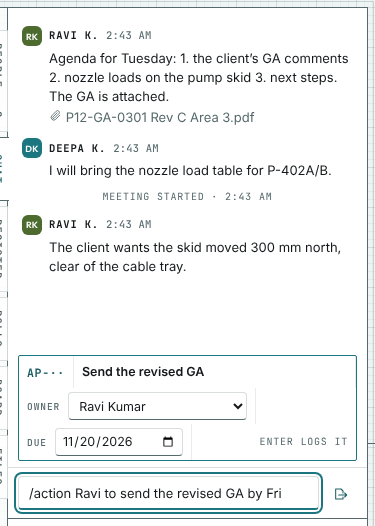
Fig. 9-8/action in the Room's chat: the card reads the owner and the date as you type
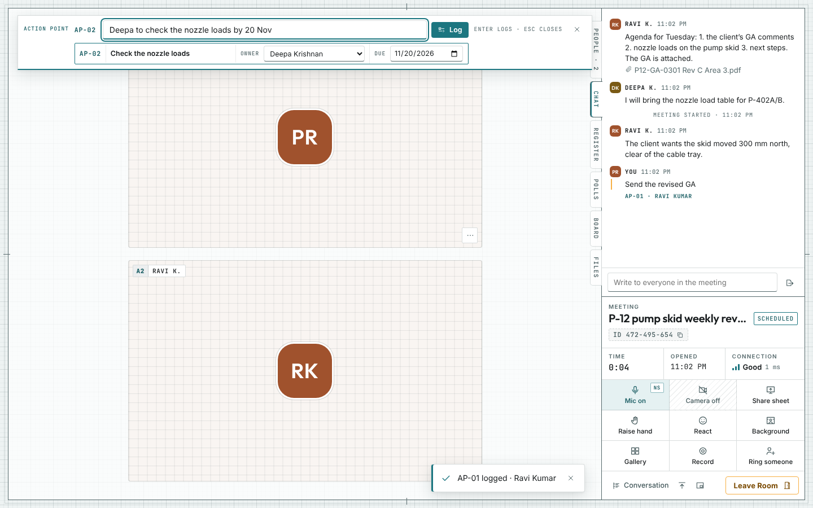
Fig. 9-9 The strip opened with A on the stage. The line before it is in the chat as AP-01 · Ravi Kumar.
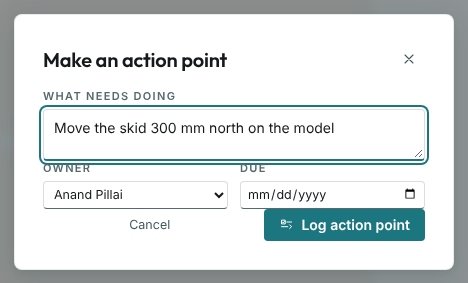
Fig. 9-10Make an action point from Ravi's line
What happens then
The owner hears once: one quiet notification, a TO DO on their Desk (with a reminder on the due date, at the
start of the working day), and an item on their Nib day sheet, given by the meeting's organiser. Someone from outside gets none of these.
The card in the thread shows the number, OWNER, DUE and the state (Fig. 9-11). The pencil changes the owner or the date;
Drop it takes a point off the register.
Ticking it done. The owner, the organiser or whoever logged it ticks the box: on the card, in the Register, in the recap or on the
Desk. The Desk reminder and the Nib item close with it, and ticking the Nib item done ticks the action point. Done: open it again undoes it.
Overdue points are reminded once a working day, in working hours: one message from Nib listing all of a person's points that are
past their date, never one message each, and never while they are on leave.
Brought forward. When a repeating meeting is held again, its open points head the Register and the recap under
BROUGHT FORWARD, until they are done or dropped.
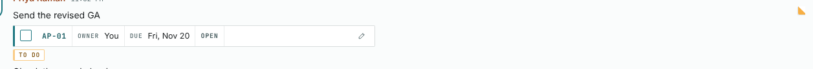
Fig. 9-11 An action point in the thread, as its owner sees it
In an encrypted Direct conversation the words of an action point stay end-to-end encrypted in the message; the
register keeps only the owner, the date and the state.
9.8 The Register and the note-taker
The Room's Register tab is the meeting's register (Fig. 9-12):
01 Agenda, with time boxes. Write the agenda (before or during the meeting): one item a line, minutes first
(10 The client's GA comments), then Save the agenda; Change edits it. Tick each item off as it is covered. The item
running is marked NOW, and the stage's title block shows it with its time left.
02 Action points: the points brought forward from earlier meetings first, then this meeting's, each with its owner, due date and state.
The box at the foot logs another one, like the chat.
03 Decisions asked in the meeting's thread while it ran.
The note-taker. The host gives the role from a person's menu on the People tab (Ravi takes the notes, or
I take the notes); the person is tagged NOTE-TAKER, and the recap names them.
Joined late? If you come in more than three minutes after the start, a card on the stage says WHAT YOU MISSED:
since when, how many messages and action points (Fig. 9-13). Read the chat and See the register take you there; the × closes it.
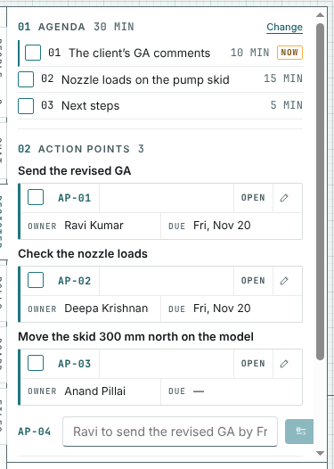
Fig. 9-12 The Register tab
Fig. 9-13 Anand joined twelve minutes late
9.9 The recap
Fig. 9-14 The recap card, posted in the thread when the meeting ends
When a meeting ends, a MEETING RECAP card is posted in its thread (Fig. 9-14): the title, date, time and length,
its drawing number (MTG-174490695-01), and a ruled line of counts: PEOPLE, FILES, ACTIONS OPEN, DONE and DECISIONS. A recap is posted when anything was captured; a meeting that never started has none.
Times on the recap card and sheet, on the MEETING STARTED line and in What you missed follow your Time format
(1:30 PM or 13:30, section 15.2).
Open the recap opens the recap sheet. You can also reach it from the Calendar (a meeting opened after it was held shows
Open the recap), from the Meet lens (Recent meetings → Recap) and from search, which finds its chat and files.
Fig. 9-15 The recap sheet
The sheet is drawn as a drawing's title block over a register. The title block holds the DATE, TIME, DURATION,
ORGANISER, NOTE-TAKER and DRG NO. Below it, in order: 01 Attendance (who came and for how long, two devices counted
once; who was invited and not there, marked ABSENT), 02 Recording (with its chapters, once processed),
03 Action points (brought forward first, with how many are done), 04 Decisions, 05 Files (each with a link to its message),
06 Polls, 07 Notes and boards changed during the meeting, 08 Agenda (covered or NOT REACHED) and the
Chat, folded until you open it, with its own search. Deleted messages and files are never shown.
Copy recap puts the recap on the clipboard as plain text, to paste into a mail or a report.
Send by email opens a panel (Fig. 9-16): choose For colleagues or For guests (only the action points and files, for
example), tick the parts to send (Attendance, Action points, Decisions, Files, Polls, Recording,
Chat), add addresses under To (email addresses, optional), and click Open the email draft. Your mail program opens a
ready-made draft for you to check and send from your own mailbox.
Open the thread goes to the meeting's thread.
A colleague who came from outside the meeting's Space sees a recap of only what they could see in the meeting, and a line that says so.
Fig. 9-16Send by email, set for guests
9.10 Guests from a browser
People outside the office (a client, a vendor) can join a meeting from a web browser, with nothing to install. A host
turns on the meeting's guest link under Guests from outside (in the Room's host controls, the Calendar's meeting
card or the personal room on the Meet lens), then copies the link, or a whole invitation as text or an .ics file. Guest links work
only while the office allows them, under Control room ▸ Policies ▸ Meetings; otherwise the app says Your office has turned guest links off.
The link is the meeting's page on the office's meeting site, such as https://dexterity-meet.pages.dev/482-913-207#Hx7kP2qR or a name you chose (section 9.11). The part after # is the passcode. Renew makes a new passcode (the old link stops working). Older links on the gateway's address still work.
The guest types their name, checks camera and microphone, and waits in the lobby until a host admits them. They see and hear the meeting, share their screen, raise a hand and write in the meeting chat. They see the names of the people in the meeting and nothing else of the office.
Meetings of more than 8 people run on the office network's relay, which browsers outside cannot reach: such meetings cannot take browser guests, and the guest link panel says so.
9.11 Meeting pages and links (Dexterity Meet)
Every meeting has a page of its own on the office's meeting site, Dexterity Meet. It is the address you send to people
outside the office, and it is what they open from their invitation. Guests need no app and no account.
Clean links and names
A meeting's page is at its ID, https://dexterity-meet.pages.dev/482-913-207, or at a name you choose,
https://dexterity-meet.pages.dev/p12-design-review. The guest link adds the passcode after #; the page takes
it out of the address bar at once, so a shared screen does not show it.
Names are 3 to 40 lowercase letters, digits and single hyphens, starting with a letter. The box checks the name as you
type: Free: …/p12-design-review, or why it cannot be used (taken, kept for the site, or used by someone else in the last 30 days).
A name you give up keeps pointing only to your meeting for 30 days, and only you can take it back in that time.
Your personal room is named after you (…/vikram; …/vikram-shah when the first name is taken).
Change it on the Meet lens under Your personal room → Change the name, and turn guests on under Guests from outside.
The Meet lens shows each coming meeting's page with a copy button.
Planning a meeting with a page
In New meeting (section 9.2), keep Hold it as a call in Dexterity Connect on. Under Meeting page for guests,
switch on Guests from outside can join from a browser.
Give the page a name in the box beside the site's address, or leave it empty to use the meeting ID.
Choose whether to Show the title on the invitation page, and the Lobby rule.
Click Send invitations (or Save). The dialog stays open on the invitation (Fig. 9-17).
The invitation block shows the Link with Copy, the Passcode with Renew (a new passcode: the old link
stops working), the Name with Save name, the Page setting, Afterwards (a note guests read when they leave,
such as The minutes follow by Friday; Save note) and the Lobby. Under it:
Copy invitation: the invitation as text, with the link and passcode, to paste into a mail or a chat.
Download invitation (.ics): a calendar file that adds the meeting to the guest's calendar.
Send by email: opens a ready-made email in your PC's mail program (Outlook, Windows Mail, Thunderbird), with the
invitation as text and as a formatted message and the .ics attached. Add the guest's address and send it from your
own mailbox. Where no mail program opens drafts, and on phones, a plain email opens without the calendar file, and the app says so.
The same block is in the meeting's card in the Calendar for the organiser, and in the Room's host controls.
Fig. 9-17 The meeting's page and invitation, in the meeting dialog
Show the title on the invitation page. Before a guest types the passcode (or opens the link with it),
the page says only Meeting with Dexterity Design Services, the date and the time. With this setting on, it also shows the
meeting's title and your first name. It is on by default for meetings planned in the Calendar, whose invitations go to named people,
and off for instant meetings and personal rooms, whose working titles and links tend to be passed around. The page never shows the
list of people invited, email addresses or anything else of the office.
What the guest sees
Fig. 9-18 The meeting page before the meeting starts
The page is drawn as one of our drawing sheets. On the left, the guest works down the form: the countdown, the time in their own
time zone, Add to calendar (Calendar file, Google Calendar, Outlook.com), Check camera and mic,
Test speakers and Choose devices, then their name and Ask to join. The room opens ten minutes before the start,
by itself. On the right is a drawing about this meeting and this visitor, and the title block (meeting, date, time, host, ID, status):
01 Time
The meeting's slot on a day ruler with two scales, the visitor's time above and the office's below. A NOW
cursor moves along it; before the start a dashed leader carries the countdown and the ten minutes the room is open early are
hatched; during the meeting the time gone is hatched in amber; afterwards the length is dimensioned. A repeating meeting shows its next time.
02 Readiness
Four instrument tags, NET, CAM, MIC and SPK, on a loop to YOU: hollow until checked,
then teal with a tick. MIC draws the microphone's level; SPK fills after Test speakers; NET measures the connection.
03 Revisions
A revision block that fills itself: DRAWN when the page opens, CHECKED with the guest's name
when the checks pass, AWAITING APPROVAL in the lobby, APPROVED FOR ENTRY (with a stamp) when the host lets them in, and
ISSUED with the time spent, afterwards.
Fig. 9-19 In the lobby: The host will let you inFig. 9-20 After the meeting: the host's note and the next date
In the lobby (Fig. 9-19) the guest waits until a host admits them (section 9.5), with Mic on and Leave the lobby.
When they leave, the page says Thanks for joining (Fig. 9-20), with the time spent, your note from Afterwards, the next
date of a repeating meeting (Add the next one) and Join again while the meeting runs. Staff who open a meeting link get
the same page, with Open in Dexterity Connect to join from the app.
Rescheduling and cancelling
Moving the meeting (Edit on its card in the Calendar) moves the page's time. Invitations keep the same calendar
entry, so calendars that already have it update it instead of adding a second one.
Cancel meeting shows This meeting was cancelled to anyone who opens the link with the passcode, and on any page
that is already open. Pages update themselves every 15 seconds, so a guest sees a change without reloading.
Before the passcode, an unknown name, a meeting that ended, one that was cancelled and one whose link is off all read the same:
No meeting to show here yet.
9.12 Webinars
A webinar has an organiser and up to 7 panelists on a stage, and an audience that watches but is never seen or
heard. People outside the office register on a page of their own. Click Plan a webinar on the Meet lens and fill in the
title, What it is about (on the registration page), the date, start and length, the panelists, how registration is
approved, whether Everyone in the office can watch it from the Meet lens, and the questions on the registration page.
On the day, the organiser opens the stage as a practice session, then clicks Go live. The stage has tabs for
Questions (with votes, answered live or in writing), Audience (raised hands, inviting someone to speak),
Polls and Handouts. It can also be streamed live to a service such as YouTube. Afterwards the organiser sends a
thank-you with the recording and an optional survey, and reads the report. The hub sends no email: the app writes the
invitations, reminders and follow-ups for you to send from your own mailbox.
Fig. 9-21Plan a webinar
10 Directory and the office drawing
Fig. 10-1 The Directory, People tab
The Directory lens lists everyone in the office. The line under the title counts people, who is online and the
departments. Four tabs: People, Org chart, Departments and Day log (who is working today and where;
managers and administrators see their team's attendance and can export it as CSV).
On People, search by name, title, department or extension, pick a department, and choose Everyone or
Online. Each card shows the extension, the job title and department, where they are today and since when, and their status.
10.1 A colleague's card
Click a person to open their Directory card beside the list (Fig. 10-2): department, extension, seat, line manager,
status, today's place, joining date and birthday, Windows account, and the Spaces you have in common.
Write to … opens your Direct conversation with them.
Open a Room calls them, with voice or video.
See in the org chart flies to them on the office drawing.
Your own details (phone, extension, seat, birthday) are yours to change in Preferences → Contact details. Your
department, designation and manager are set by an administrator.
Fig. 10-2 A Directory card
10.2 The office drawing (Org chart)
The Org chart tab draws the whole office on one sheet, like an engineering drawing you pan and zoom in a CAD
viewer: drag to pan, use the mouse wheel or pinch to zoom, double-click to zoom in, or use the zoom cells in the corner
(+, -, and 0 for the whole sheet). The title block at the bottom right shows the drawing, how
many people are in, the live scale and the grid square under the pointer; the key plan at the bottom left shows where you are.
Fig. 10-3 The Lines sheet: reporting lines, with departments as areas
Lines and Floor
Lines draws the reporting lines, routed like pipes from each manager to their team, with each department as an area (a chain-line boundary). Floor draws the office's real floor plan, with everyone on their seat (section 10.3). The two sheets look different on purpose: Lines shows the structure (who reports to whom), Floor shows where people sit, so a team that is close on Lines can sit far apart on Floor.
Plates
Each person is a plate: tile, name, designation and a strip with extension, seat and grid square. A solid plate with a teal edge means they are in today; a paper-coloured plate, not signed in. New colleagues this month have a revision cloud, birthdays a pennant and work anniversaries a small 5 yrs box. YOU ARE HERE marks your own plate. Key explains every mark.
Find
Type a name, designation, seat or extension in the search box: the sheet spotlights the person and flies there.
The callout
Click a person for a small title block with their details and Write, Room, How we connect, Spaces and Card (Fig. 10-4).
Across to the other sheet
On Lines, the callout's Find on the floor switches to Floor and flies to the person's seat, with them still selected. When there is no seat to show it says why instead: No seat on the plan, Working from home today, On site today or At a client today. On Floor, a person's callout has See in the reporting lines, which goes back to their plate on Lines.
Fig. 10-4 Farhan Qureshi's callout, with Find on the floorFig. 10-5How we connect: the route through the reporting lines
How we connect draws a heavy teal route along the reporting lines from you to the person, with numbered steps and the Spaces you share. On the floor plan, Walk there draws the walk to their desk (section 10.3). Clear the route removes it.
Spaces (top right) lays a Space over the sheet: a hexagon tag with dashed lines to its members (Fig. 10-6).
Growth adds a scale that replays how the office grew: drag it to see the office as it was on a date.
Schedule lists everyone as a tree (or, on the floor plan, by room), for keyboard and screen-reader use. On the sheet itself the arrow keys walk along the lines: up to the manager, down to the team, left and right to colleagues; Enter opens a person and Home goes to you.
Fig. 10-6 A Space laid over the sheetFig. 10-7 The office drawing in the dark theme
10.3 The floor plan and your seat
Fig. 10-8 The Floor sheet: the office's own seating layout, with people on their seats
Directory → Org chart → Floor is the office's own drawing: the seating layout of Level 01 (drawing DDS-FLR-001), at real
scale, with its walls, glass, doors, columns, rooms and furniture, and every seat with the person who holds it. The title block shows the
drawing, its revision, how many people are in and away, the scale and the grid square under the pointer. Pan and zoom it like the other sheets.
People on their seats. A tile on a desk means the person is in the office today; a dashed desk means they work elsewhere today
(home, a site or a client); a dashed chair is a free seat; a hatched desk is reserved for a role or a team. Key explains every mark.
Departments washes each department's seats in its own colour.
Schedule lists everyone by room, for keyboard and screen-reader use.
Seat IDs
Every seat has an ID, printed on the plan under the seat. The ID tells you where it is:
IDs
Zone
Where, and how they are numbered
W-A01 … W-A53
Left benches
53 workstations: five double benches of 5 + 5 and a short row of 3. Numbered bench by bench from the north: the north side west to east, then the south side, so bench 1 is W-A01 to W-A10 and the short row W-A51 to W-A53.
W-B01 … W-B20
North-east benches
20 workstations: two double benches of 5 + 5, numbered the same way.
POD1-1 … POD2-9
Senior pods
18 senior workstations in two pods of three Y-shaped clusters, numbered north to south, then west to east.
HC-03 … HC-10
Half-cabins
Half-cabins 03 to 10, the drawing's own numbers. Some are kept for roles (3D manager, E&I, civil and piping managers, the Knowledge hub).
W-C01 … W-C42
South-east benches
42 workstations: a row of 6 (W-C01 to W-C06), then three double benches of 6 + 6.
CC-01 … CC-09
Client cabins
Client cabins 01 to 09.
MD-01, MD-02
MD's cabins
MD-01 is the north cabin, MD-02 the south.
REC-01
Reception
The front desk.
Finding a seat, and walking there
Find takes a seat ID as well as a name: type W-A08 and choose Seat W-A08. The plan flies there and opens the seat's
callout (Fig. 10-9): the seat, its zone, Held by (a person, a reservation, or Nobody: free) and its type. Clicking a seat does the same.
Walk there (on a seat, on a person's callout, or on your seat notice) draws the walk from the entrance, or from your own seat,
round the desks, with a dotted line and about how many steps it is (Fig. 10-10).
Hot desks are seats anyone can use for a day. Click one: its callout shows who has it Today, a Book for day
(today, or a working day up to two weeks ahead; office holidays are left out) and, under Booked, the days it is already booked and by whom.
Choose the day and click Book for today (for another day the button names it: Book for Tue, Nov 17); Cancel my booking gives that day back. You have one hot
desk a day: booking another for the same day moves your booking.
When your seat changes
When the office manager moves you, Nib (or the system bot) tells you once, with a link that opens the plan at your new seat. On the
Floor sheet a notice says From Monday, Nov 16 your seat is W-A19 · Left benches., with Walk there and Got it. On that day
your Directory card changes by itself.
Your Seat field. Once you hold a seat on the plan, Seat or location in Preferences → Contact details shows it
(W-A19 · Left benches) and cannot be typed in: From the floor plan. The office manager moves seats. In an office with no plan,
it stays free text, as before.
Fig. 10-9 A free seat, as the office manager sees it (Reserve… and Make it a hot desk are only for them)
Fig. 10-10 Priya's seat notice, and Walk there from her old seat to the new one
10.4 For office managers: arranging seats
Seats are changed only by administrators and the office managers they name. An office manager sees Arrange and
Revisions on the Floor sheet.
Naming the office managers (administrators)
Click your tile (your picture, top right) and choose Control room, then Organisation.
Under Office managers, type part of a name in Add an office manager… and pick the person from the list (the arrow keys and
Enter work too). They appear as a chip.
To take someone off, click the × on their chip.
Each change appears in the Audit log (Control room → Audit log) as changed the office managers.
Only members can be named: administrators can arrange seats already.
Fig. 10-11Office managers in Control room → OrganisationFig. 10-12Arrange: Priya dragged from the list onto W-A19. The dashed arrow is a move still to take effect.
Every change goes into a move plan: a list of moves, drawn on the plan as dashed arrows (amber while it is a draft, teal once
published), which takes effect on a day you choose. Nothing changes for anyone until then. Arrange opens the panel, with five tabs:
People
Everyone, with their seat. Drag a person from the list, or from their seat on the plan, onto a seat; drop them on someone
to swap the two. The list beside Find a person or seat shows Everyone, No seat yet or one department. Tick several (or Select all shown)
and drag them to a zone: they fill its free seats in order from there.
Move plan
The plan's name and its moves (Priya Raman W-A11 → W-A19), each with an × to take it out. Choose the day
under From and click Apply from … (or Apply now); Discard throws the plan away. Everyone it moves is told once, with a
link that walks them to their new seat; their Directory seat changes on the day. Until then, Take back returns a published plan to a draft.
Under Last applied, Undo takes back the latest plan, as long as its seats have not changed since: everyone goes back to the seat they had.
Move a team
A whole Department into a zone (To), optionally Starting at seat. Preview lists who goes where
(W-C07 → W-B04); Add to the move plan adds them (Fig. 10-13).
Import
Paste lines of seat and name under Seats and names (W-A14, Priya Raman), or Open a CSV, and click
Match names. A full name or a Windows user name is matched for certain; a first name or an initial is only Suggested, and is used
only when you tick Use line …. From the directory's Seat field takes seats from people's old free-text seats, where they name a seat
plainly (W-A14, Reception).
Layout
Edit the layout changes the drawing itself (Fig. 10-15): drag seats, nudge them with the arrow keys (by 3 inches; with
Shift, a foot), turn them with R, Duplicate (Ctrl+D), Remove (Delete), Select its bench, Add a bench of
a number of seats, Add a pod of 6, rename rooms, and type exact X (ft), Y (ft) and Facing (°). Undo (Ctrl+Z) and
Redo (Ctrl+Y) work as usual. Overlapping seats and duplicate IDs are listed under Problems and marked; a layout with problems cannot be
saved, and a seat someone holds cannot be removed. Say What changed and click Save layout: it becomes a new revision.
Add an underlay lays a new drawing (a PDF page or an image) faintly under the plan, to trace when the office changes; only people who arrange seats see it.
Fig. 10-13Move a team, with its previewFig. 10-14 The Move plan, set for Monday
Seats from a callout. On a free seat, Reserve… keeps it for a role or a team (Piping · hot desk), and Make it a hot desk
makes it bookable by anyone; on a held seat, Free it empties it. Each is added to the move plan like any other move.
Fig. 10-15 The layout editor: a bench of 4 added, selected
Revisions, compare and print
Every change that takes effect is a revision of the plan, lettered like a drawing's: Rev A is the drawing as it was built in,
then B, C and so on, each with its date, who made it and what changed. Revisions lists them. Choose two under Compare and
with and click Compare: the later one is drawn with a revision cloud and triangle round every seat that changed, and a notice says
how many (Fig. 10-16). Stop comparing ends it.
For the notice wall: PDF and PNG print the current plan on an A3 sheet with its title block and the names on the seats.
Fig. 10-16 Rev B and Rev C compared
11 Notice board
The notice board is where the office's official notices live: policies, circulars, holidays, IT advisories, safety
notices and events, from management, HR, IT and Admin. Each notice is numbered by the desk that issues it, revised like a drawing,
carries its PDF inside it, and, when it asks for it, is acknowledged by everyone it is for. It is kept for reference, so you can look up
the policy in force months later.
Fig. 11-1 The Notices lens
11.1 Where notices are
The Notices lens, the last one in the lens bar: click it, press Ctrl + 8, or press G then N
outside a text box. The lens shows an amber count when notices are waiting for your acknowledgement. GO TO offers Go to the notice board: policies, circulars, holidays.
Pulse is the way in (Fig. 11-2). A notice that waits for your acknowledgement is at the top of Needs you, with an amber
ACKNOWLEDGE tag. Further down, This week at the office (Fig. 11-3) shows the week's seven days with holidays
and office events on their day, and the notices issued this week; Notice board · … in force opens the board. On a phone, where the lens strip has room
for five lenses, this card is the way to the board.
A desktop notification when a notice is issued for you, and a line from Nib (section 11.8) while one waits for you.
Search.Ctrl + Shift + F and GO TO find notices by their title, their text, their number and the text inside their PDFs.
An urgent notice (an IT outage, a safety alert) shows a banner under the title bar for everyone it is for (Fig. 11-7):
URGENT, its number and title, Read and Dismiss (the ×). The banner has its own row: it pushes the page down rather than covering it. Dismissed on one device, it does not come back on your others.
Fig. 11-2 Notices to acknowledge, at the top of Needs you on PulseFig. 11-3This week at the office, further down Pulse
11.2 The board
The title block
Notice board, with how many notices are in force, how many need you and how many are in the archive, and
Search notices and their PDFs. Search results say where the words were found, for example In the PDF.
In force · standing policies
Policies and other standing notices, drawn as pinned sheets: the number (with an amber ACKNOWLEDGE beside it while it waits for you), the title, and the
revision and date, with a teal tick once you have acknowledged it. A sheet behind it for each earlier revision.
Filters
The desk (All desks, Admin, HR, IT, Management…), Every kind (Policy, Notice, Circular,
Holiday, IT advisory, Safety, Event), Every year, Needs my acknowledgement and Archive (expired and withdrawn notices).
The register
One ruled row per notice: No. · Rev (HR-POL-0001 · Rev A), Title (with a PDF tag when it has one),
Desk · kind, Issued, Effective and Status. An amber mark on the left edge means it needs you; a teal one, that you have
not opened it yet. Click a row, or move to it and press Enter, to read it.
A notice's number is the desk's code, the kind's code and a running number: HR-POL-0001 is HR's first policy, IT-ITA-0002 IT's
second advisory. It is given when the notice is first issued. Revisions are lettered like drawings: Rev A, B, C…
11.3 Reading a notice
Fig. 11-4 A notice open: its title block, the language switch, its text and its PDF
A notice opens as a sheet from the right (on a phone, the whole screen). Esc closes it.
The title block: the kind (POLICY), the title, Issued by (the desk and the person), Number,
Rev, Date, Effective, Expires, Addressed to and Status. A withdrawn notice carries a
WITHDRAWN stamp with the reason; an earlier revision opened from its history carries SUPERSEDED.
The language switch. When the issuer wrote a Hindi or Tamil version, cells under the title block offer English,
हिन्दी and தமிழ்; your own language is shown first when there is a version in it. The notice's words are what the issuer
wrote: nothing is translated by machine.
The text, with bold, lists and links as in messages. In a revised notice, every new or changed paragraph sits in a
revision cloud with a triangle and the revision letter, under a box that says what changed (section 11.7).
The PDF is shown inside the notice, in the app's PDF viewer (page strip, zoom, find, download); its full-screen button opens it larger.
Further down: Questions and answers (the desk's published answers), Ask the issuer privately (section 11.5), Related
notices and the Revision history (each revision with its date, what changed and its status; Show Rev … opens an older one).
11.4 Acknowledging a notice
A notice that asks for it ends with an amber box, Acknowledgement · HR asks you to confirm (Fig. 11-5). Acknowledging is a
deliberate act:
Read the notice and its PDF.
Answer the check questions, if there are any (up to three, chosen by the issuer). If an answer is wrong, the app says only
One of the answers does not match the notice. Read it again and try once more.
Tick the statement, I have read HR-POL-0001 Rev A and understood it.
Click Acknowledge.
A stamp, READ AND UNDERSTOOD with your name, the number and the revision, lands on the title block (Fig. 11-6),
and the notice leaves your Needs you. Your acknowledgement counts for this revision and later ones, unless a later revision asks everyone again.
Fig. 11-5 The acknowledgement, with a check question
Fig. 11-6 The stamp on the title block, once acknowledgedFig. 11-7 An urgent notice's banner, under the title bar
11.5 Asking the issuer
A notice has no comment thread. To ask about it, click Ask the issuer privately, write your question in the box (Your question
to the HR desk (only they see it)) and click Send to the desk. The desk answers you privately, or adds the answer to the notice's
Questions and answers, where everyone sees it without your name. Nib tells you in one line when the answer comes. You can ask up to five
questions a day about one notice.
11.6 For issuers: writing and issuing a notice
The people an administrator names as a desk's issuers (section 11.10), and administrators, see Draft a notice on the board,
and the desk's drafts and scheduled notices under On the desk's table · drafts and scheduled.
Fig. 11-8Draft a notice: desk, kind, text and the PDFFig. 11-9 Further down: who it is for, and the acknowledgement
The composer is a sheet with numbered sections:
Section
What you set
01 Desk and kind
The Issuing desk (only those you issue for), the Kind (Policy, Notice, Circular, Holiday, IT advisory,
Safety, Event), and On the In force shelf while it is in force (on for policies).
02 Text
The Title and The notice, with the same formatting as messages. Leave a blank line between paragraphs.
03 Attachment
Attach the PDF (from a PC). Readers see it inside the notice, and search finds its text.
04 For
Everyone in the office (never guests), or any of: Departments (and the ones under them), Roles,
Locations, as on profiles and People. The heading counts how many people that is now (04 · For · 14 people now). The
audience is worked out again every time, so a new joiner in Piping sees the Piping notices in force.
05 Acknowledgement
Ask readers to acknowledge: read and understood, and Add a check question: the question, two to
four answers (Add an answer), and the right one marked. The right answers stay on the hub.
06 Dates
Effective from (the day of a holiday or an event) and Expires (it moves to the archive).
07 Translations (optional)
A Hindi and a Tamil title and text, for readers who use the app in those languages.
08 Related
Link a related notice… (up to ten).
Save draft keeps it on the desk's table. Throw away deletes a draft that was never issued.
Preview shows the notice exactly as a reader in its audience will see it, with its number-to-be; Back to the draft returns.
Schedule…: choose Issue on (a date and time) and click Schedule. The hub issues it at that time, even if no one is signed
in; until then it reads Scheduled for …, and Take back to a draft stops it.
Issue now asks once to be sure (It goes to 14 people at once.) and issues it. The number is given now, and everyone it
is for gets one notification.
11.7 Revising a notice
Fig. 11-10 Rev B, as readers see it: what changed, and the changed paragraph in a revision cloud
On an issued notice, Revise (Rev B) opens the composer on the next revision. Readers keep seeing Rev A until Rev B is issued.
Under 08 · Rev B, write What changed, and choose Ask everyone to acknowledge again if they must (off unless you choose it:
then earlier acknowledgements stop counting, and everyone it is for is asked again).
Issue Rev B issues it. Rev A becomes SUPERSEDED. The new and changed paragraphs get revision clouds, and how many
paragraphs were taken out is noted under what changed. Readers see the notice in their Needs you again only when it asks them again;
otherwise its row carries the teal "not opened" mark until they open it.
A draft revision can be thrown away (Throw away); the revision in force is not touched.
11.8 The acknowledgement register, reminders and the digest
Fig. 11-11 The Acknowledgements tab, for the desk
For the desk's issuers and administrators, a notice that asks for acknowledgement has an Acknowledgements tab beside Notice
and Questions (Fig. 11-11). The Acknowledgement register has one row per department and one square per person, filled teal
when they have acknowledged and hatched while they wait (point at one for the name and time), with the count and percentage in the title block.
It fills in as acknowledgements arrive. Nobody else sees who has acknowledged, and nobody sees who only opened a notice.
Reminders to readers are polite and few: nothing on the day a notice is issued; from 10:00 the next day, at most one line a day
from Nib, listing everything still waiting for that person; and three reminders at most for each revision.
Remind those waiting sends one reminder now, once a day per notice, only to people who have not had a line that day.
The desk's digest. From 16:00, each issuer gets one line a day from Nib: the desk's notices still waiting, with counts by department.
11.9 Withdrawing, expiry, the archive and the email copy
Withdraw… takes a notice out of force at once. Say Why it is withdrawn: readers keep a stamped record with your reason
and the date, and it asks no one for anything any more.
A notice with an expiry moves to the Archive on its expiry date. Withdrawn and expired notices are kept in the archive
(for ever, unless an administrator chooses otherwise); notices in force are always kept.
Email copy opens an email draft in your PC's mail program, with the PDF attached, addressed to the people in the audience who
do not use the app and have an email address on their profile. It says how many have no address. Check it and send it from your own mailbox.
11.10 For administrators: Notice desks and urgent notices
Fig. 11-12Control room → Notice desks
Control room → Notice desks (section 19.1) sets up the board:
Issuing desks. Admin, HR, IT and Management come set up. Add an issuer… under a desk names who issues for it; the × on a
name takes them off. A desk with no issuers is issued for by administrators only. Add a desk with a Desk code (two to four letters)
and a Desk name. A desk that has issued notices keeps its code.
Records.Keep withdrawn and expired notices for ever, or for 1, 3 or 7 years. A legal hold on a notice's author keeps theirs.
Export the register: every notice and revision, who it was for, what changed, and every acknowledgement with its time, for an audit.
Move pinned messages onto the notice board. The messages pinned in the Office space are listed; tick those that are really notices,
choose the desk and kind, and click Move … to the board. Each becomes a notice issued to everyone on the day it was posted (its first
line the title, its first PDF the attachment), and its pin comes off.
Urgent notices are for administrators only. In the composer, tick Urgent: a banner for everyone it is for (three a
day for the office). An urgent notice goes out at once (it cannot be scheduled), shows its banner once to everyone it is for, and lasts a day
unless you give an expiry (a week at most). The office can issue three urgent notices a day; a fourth is refused, and should go out as an ordinary notice.
12 Bots
A bot asks people one question at a time, in its own conversation with them, keeps their place, and at the
end puts a task on someone's Desk, posts a summary in a Space or sets a reminder. Anyone can make one; no programming is needed.
12.1 Using a bot
A bot is offered as a card in a Space or on your Desk (Desk → Bots → Bots you can use). Click Start. The bot
greets you and asks its first question as a card: choose an option, type an answer, pick a date, a colleague or a file, and
click Next. You can go back a step or cancel. If the bot has office hours it says when it is closed. Some bots remember
your last answers; Forget my answers clears them. A bot that follows your request afterwards keeps it on a card of its
own (section 12.5).
12.2 Making your own bot
Fig. 12-1Make a bot: start from a template, from a few words, or from a copy
Open Desk → Bots and click Make a bot.
Choose how to start: A template (Plot request, Leave note, Site visit, Technical query (TQ), Software seat, Late work request, Drawing check and issue, Weekly TQ chaser or Friday timesheet, with Use this; or Start blank), Describe it in words (a small model on your PC drafts the bot from a few sentences), or Copy a bot. Hover a template to try it in the preview on the right.
Edit it in the eight parts: Identity, Questions, At the end, Afterwards, Other bots, Schedule, Sharing and Advanced.
Click Test run to play the bot on the right with its real cards. Nothing is sent during a test run.
Click Save bot.
Fig. 12-2 The Questions tab, with the preview on the right
Tab
What you set
Identity
The bot's Name and what it is for, its mark (a drawn symbol or letters) and colour, its voice (Plain, Warm, Brief or Formal, which changes how it words everything), the greeting ({{user.first}} puts in the person's first name), and whether it answers only during office hours (Fig. 12-3).
Questions
The questions, in order. Ask a bot adds a question another bot answers (section 12.9). Add Choices, Short text, Paragraph, Number, Date, A person, A file or Confirm. Each can be checked (for example a job number like P-12513), and choices can route to different next questions. A problem is shown beside the question it is in.
At the end
What happens with the answers: a task on someone's Desk (for example the person's lead), a post in a Space, a reminder, Hand to a bot (section 12.9), or Nib marks the person away, which hands the answers to Nib's leave note (the Leave note template ends with it, section 8.8).
Afterwards
Carry each request on after it is sent: stages, who acts, buttons, reminders and a register (section 12.7).
Other bots
What other bots may ask it, what it listens for, and the bots it works with (section 12.9).
Schedule
Things it does on a schedule, written in plain words (section 12.12).
Sharing
Keep it to yourself, share it with a Space, or ask an administrator to make it office-wide (it then shows Waiting for review).
Advanced
The bot as JSON, for those who prefer it.
Fig. 12-3 The Identity tab: Plot desk with a plotter symbol and a warm voice
12.3 Looking after your bots
Each bot you made has a page on Desk → Bots with its runs (Finished, Stopped, In progress, the
Finish rate), Where people stop, Recent runs and its Revisions. Edit, Start, Share,
Pause, Retire and Delete are at the top. Every save is a new revision; a conversation already under way
carries on with the revision it started with.
12.4 Office bots that follow a request
Six of the templates do more than ask questions: they carry each request on after it is sent. The request gets a number
(DC-0007) and moves through stages; at each stage one person acts on it with buttons, and the person who asked watches it
move on the card they already have. Make one from Desk → Bots → Make a bot, choose the people it names under Afterwards
(section 12.7), and share it with your Space or the office. Until you choose them, the people it names are you.
Their lead is the person's manager in the Directory, or else their department's head. Someone who is away with a contact
set (section 3.3) is passed over to that colleague, and the card says whom they cover for.
Template
What happens, from the side of the person who asks
Drawing check and issue DC-0001
You give the job, the drawings, the revision, what they are issued for (Review (IFR), Approval (IFA), Construction (IFC), As-built), the checker, the check print and the issue date, then Send for check.
Check: the checker ticks a four-line checklist and presses Checked, no comments, or Return with comments.
Correct (if returned): you correct the drawings and press Corrected, send for back-check; the check comes back as Round 2.
Approve: your lead presses Approve for issue or Send back.
Issue: document control presses Issued on transmittal and writes the transmittal number.
Client receipt: document control presses Client acknowledged: stamp ISSUED. Document control gets the register at 09:20, Monday to Friday.
Technical query (TQ) TQ-0001
You give the job, discipline, drawing or document, the question, a proposed answer (the client answers faster with one), a mark-up and the date you need the answer.
Review: your lead presses Send to the client, Answer it here, Ask to reword (you reword it and press Reworded, send again) or Not needed (NOT NEEDED).
With client: the client interface records the reply with Client replied.
Close out: once the answer is in the drawings you press Close the TQ (CLOSED), or Ask again. The client interface gets the register on Mondays at 09:30.
Plot request PLT-0001
You give the job, drawings, sheet size, sets, the date and the approver (your lead is offered), then Send for approval.
Approve: your lead presses Approve, Ask for a change (you answer with Changed, send again) or Turn down (TURNED DOWN).
Plot queue: the plot room presses Start plotting or Cannot plot it; Plotting: Ready to collect, with where.
Collect: you press Collected (COLLECTED). The plot room gets the register at 09:15.
Software seat LIC-0001
You choose the software (E3D, PDMS, AutoCAD Plant 3D, AutoCAD, Tekla Structures, STAAD.Pro, CAESAR II, Navisworks) and the job. If a seat is free it is yours at once (In use). If all are taken, your card says In line for E3D: place 2 of 3 and who holds the seats since when; it moves you up by itself.
Press Release the seat when you are done (RELEASED), or Still using it when asked: the person who has held a seat longest is asked once, politely, when someone is waiting. IT gets the register at 17:45.
Site visit SV-0001
You give the site, day, job, how many are going, the purpose and the site contact.
Approve: your lead presses Approve the visit or Not now (NOT APPROVED).
Gate pass: admin arranges the pass and travel, with a note for the team.
Safety: before the day you tick the PPE and permit checklist; Ready to go needs every line.
Visit report: within two days, Send the visit report. Read: your lead presses Noted (REPORTED) or Ask for more.
Late work request LW-0001
You give the day, until when, the job, what needs finishing, and whether you need a cab home.
Approve: your lead presses Approve or Not approved. Arrange: admin and security press Arranged, with the cab number for you (APPROVED). Admin and security get one list at 16:30 of who stays late, until when, and who needs a cab.
12.5 Reading a request card
Fig. 12-4 Priya's request after the back-check: with her lead to approveFig. 12-5 The register, after writing register to the bot
Each request is one card, laid out like a title block (Fig. 12-4):
Number and name
The request's number and its name, such as DC-0001 P-12513 · rev C IFC. The corner says
For you when you act now, Following when you asked for it, or Closed.
The stage strip
One ruled cell per stage, numbered: a tick when done, a dot where it is now, a back arrow where it was
returned. A stage done a second time shows Round 2. A stage off the usual way (such as Correct) shows only while the request is there.
Stage, Who, Since, Due
Where it is, who has it (With Meera Nair), since when, and when it is due (in
amber, Overdue, once late).
Your turn
When it waits for you, Who reads WAITING FOR YOU, the card shows what you
are asked, a checklist if the stage has one, and the stage's buttons. A button that needs a note opens a box first; a button
marked for the checklist waits until every line is ticked. On the card you follow, Your turn: the card below
means the request is back with you, on the newest card.
Stamps
When it closes, the card carries a stamp such as ISSUED, CLOSED
or TURNED DOWN, with the date, and the person who asked gets one line with it.
Details, History
The answers, and every step with who did it and when.
Withdraw, Take it over
The person who asked can Withdraw a request while it is open. A lead who was told that
a request is stuck can Take it over and act on it themselves.
Each conversation shows one live card per request: when a newer card for it arrives, the older one folds to a line,
See the latest card below.
12.6 The register and reminders
The register. Write register to the bot (or status, queue, who has one now) and it answers with
one card (Fig. 12-5): Open, Overdue, Waiting and Closed this week, the oldest open request, a bar of open
requests by stage, the places in use for seats, and each request, which opens in place to read or act on. You see the requests you
are part of; the bot's maker, the people it names, the leads concerned and administrators see all of them. The register is also
posted on its schedule, only when something is open, and each new one replaces the one before.
Reminders are few and polite. A request that waits (a day, unless the bot says otherwise) is mentioned to the person it
waits for, at most twice, only in working hours (the bot's office hours, or Monday to Saturday, 09:30 to 18:30), and never while
they are away. Reminders are gathered into one list per person, Waiting for you, which replaces their last one and can be acted
on directly. After the last reminder the request is passed up once, usually to the lead of the person it waits for, who sees it under
Passed up to you and can Take it over.
12.7 Afterwards: tracking your own requests
Fig. 12-604 Afterwards in the bot maker, with Fatima Begum named as document control
Any bot can follow its requests: in the bot maker, open 04 Afterwards and click Track each request (the six
templates above have it already). The part has:
Field
What you set
Each request is numbered
The letters before the number (DC gives DC-0001).
Its name in the register
Made from the answers, for example {{job}} · rev {{rev}}; INSERT adds an answer.
People it names
The plot room, document control, the client interface: name each once here (Add a person it names). Until you choose someone, it comes to you.
Stages
For each stage: Stage name, Who acts (the person who asked, their lead, a person chosen in the questions, or a person it names), What they are asked, Due, A task on their Desk, a Checklist they tick, Places at once (only so many at once; the rest wait in line and see their place) and Buttons. Add a stage adds one.
Buttons
For each: the Button text, Then (the next stage, the same stage again, or the end), a Stamp and what It counts as when it ends, A note with it (none, optional or needed) and what The note box is called, how It is drawn (the main way on, another way, sends it back, ends it short), and Only once the checklist is ticked.
Reminders
When it waits this long, Remind them how many times, and After that, tell (once): their lead, a person it names, or no one.
Register
Post it to whom (or only when someone asks), At what time and On these days.
The Test run plays every part in turn (Trying it as: Checker), so you can press each person's buttons without
sending anything. Stop tracking requests takes it off again.
12.8 A bot's conversation
Fig. 12-7 The header of a conversation with a bot
A conversation with a bot has a header of its own (Fig. 12-7): a BOT tag, who made it
(Made by Priya Raman, Office bot or Integration), what it is for, and two cells: Open and Yours
(open requests, and those waiting for you) for a bot that follows requests, or its Hours for others. There is no call
button. Details shows who made it, what it can do and its hours, and says that conversations with a bot are not end-to-end
encrypted: the office hub runs the bot, so it reads what you answer. Keep passwords and private matters out of them.
12.9 Bots that work with other bots
A bot can ask another bot a question, hand a request on to another bot and get it back with a result, and act when another bot's
request moves. The person answering sees only what concerns them; the bots do the rest between themselves.
Ask a bot
In 02 Questions, Ask a bot adds a question that another bot answers instead of the person: Is a CAESAR II
seat free? asks the Software seat bot. Pick the question from the blocks (Find a skill: seat, leave, lead…), grouped by the bot that
answers and tagged SYSTEM, OFFICE or YOURS; fill in what it needs (Which:
CAESAR II); and choose If it cannot answer: Ask the person instead, Carry on without it, or Stop, and say why
(Fig. 12-8). Make it a plain question, under the bot's part, takes the bot away again, so the person answers it. The answer is used like any answer, in later questions, routes and messages. Every office bot that follows requests answers How
many are open? and Where is a request?; Nib answers Are they on leave?, the Directory Who is their lead? and the office
calendar Is it a working day?
Hand to a bot
In 03 At the end, Hand to a bot hands the request on (Hand it to another bot), with the answers it
carries across. The other bot starts in its own conversation with the person, says how many answers were carried, and asks only what is left.
A stage carried by another bot
In 04 Afterwards, a stage's Who acts can be Another bot carries it on: when the
request reaches that stage it is handed to that bot (for example the plot room's), and when that bot's request closes, the stage moves on by
itself with its stamp and last note. The stage's cell shows the other bot's mark and how its request stands (PLT-0001 · Plot queue).
Other bots
05 Other bots shows 01 What other bots may ask it (its own questions for other bots, and Who may ask it),
It takes requests other bots hand to it, 02 What it listens for (Listen for something: when another bot's request is sent,
reaches a stage or closes, or when someone goes on leave; then tell you, start this bot for the person, or ask a bot) and 03 The bots it works
with, with See the bot network (Fig. 12-9).
The Test run asks other bots for real, as you, and shows the relay card; a bot that would do something (such as releasing
seats) only says what it would do.
Fig. 12-8 A question that asks the Software seat botFig. 12-905 Other bots
12.10 Reading a relay card
Fig. 12-10 Priya's iso check, handed to the plot room: the stage strip and the relay card
When a bot asks or hands over on your behalf, your conversation with it shows a relay card (Fig. 12-10). The bots are drawn as
instrument tags on a small loop, letters above the line and a number below (ICP, B-01), with the message on the line between
them (PLOT DC-0001 → PLT-0001) and a stamp:
Stamp
Meaning
ANSWERED
The other bot answered the question (SEAT? · CAESAR II → 1 free).
HANDED, BACK
The request was handed over; it came back with the other bot's result.
REFUSED, STOPPED
The other bot would not take it, or the hand-over was stopped (a loop, too many bots in a row).
NO ANSWER
The other bot did not answer in time; the bot carried on as its maker chose (usually by asking you).
Under the drawing, each exchange is a ruled line, with Ask again for a question that failed and Open Plot room (the other bot's
conversation) for a hand-over. In the request card above it, the stage the other bot carries shows its mark and its request's number and stage,
with a live dot while it is open there.
Fig. 12-11 Stress check asked the Software seat bot, and its next question uses the answer
12.11 The bot network sheet
Fig. 12-12Bot network, for Priya's own bots
Desk → Bots → Bot network draws your bots, and the bots they work with, as tags on a drawing sheet with a frame and grid
(Fig. 12-12). Questions are drawn as data links (a line with small circles), hand-overs as solid lines with arrows, and listening as dash-dot
lines; the heavier a line, the more passed along it this week, with the count on it and an amber flag for failures. Messages pulse along
their line as they pass. Pick a line on the drawing, or in the list under it (ASKS, HANDS TO,
LISTENS), to see its recent exchanges and failures on the right. Administrators see the whole office's network in
Control room → Bots & tools → Bot network, with names; makers see their own bots' exchanges without them.
12.12 Scheduled jobs
Fig. 12-1306 Schedule: every Monday at 10:00, read as it is typed, with the next five runs
A bot can do things on a schedule. In the bot maker, open 06 Schedule and click Add a scheduled job:
Give it a Name (Monday chase).
Write When it runs, in plain words. The words the app understood are marked as you type, UNDERSTOOD says it back
(Every Monday at 10:00), and The next runs, office time lists the next five (Fig. 12-13). It reads, for example:
every weekday at 9:15, every Mon and Thu at 17:30, every Friday at 5 (17:00, and it says so), last working day of the
month at 16:00, 1st and 15th, every 2 hours during office hours, tomorrow at 10 or on 20 Nov at 15:00.
Choose What it does: Start this bot for people (Me, My team, The people of a Space, A department or
People I choose; Leave out people on leave that day), Post its register, Check a bot, and tell someone when it holds
(Only when the answer is more or less than a value; Tell you, My lead or a Space), Ask a bot, and post the answer, or
Remind people.
Choose If the hub was off at the time: Skip the runs it missed, or Catch up once when it is back.
Save bot.
Jobs run on the office's working days (Nib's workdays), never on the office's holidays (section 19.1, Bots & tools) and never between
21:00 and 08:00, in office time (IST) whatever the PC's own time zone. Up to six times a day, at most every 15 minutes.
Two templates that run on a schedule
Weekly TQ chaser: every Monday at 10:00 it asks the Technical query bot how many queries are older than ten days, and tells your lead when there are any.
Friday timesheet: every Friday at 17:00 it asks your team for their hours on each job (people on leave are left out); its Who is your lead? step asks the Directory, and the hours go to that lead.
12.13 The job sheet
Fig. 12-14Job sheet: Monday's run, Friday's holiday hatched, and a dry run
Desk → Bots → Job sheet (also on a bot's page, and for administrators in Control room → Bots & tools → Job sheet) draws your
jobs on a time ruler in office time: Today, This week or This month, one lane per job (Fig. 12-14). Days off and holidays are hatched,
NOW is an amber line, the next run is a filled mark with its countdown, and past runs carry a stamp:
Stamp
Meaning
RAN
It ran. Caught up in its note means it ran late, once, after the hub was off.
SKIPPED
It did not run: skipped on purpose, or missed (Missed at 10:00: the hub was off).
FAILED
It went wrong; the reason is in its note, and the bot's maker hears once a day.
DRY
A dry run: what it would have done, with nothing sent.
Point at a run, or move to it with the keyboard, to see what it did. Each lane has:
Pause (and Resume); a paused bot's jobs wait with it.
Skip next (and Do not skip) skips only the next run.
Move a run moves one run, once, by up to two weeks, to a working day between 08:00 and 21:00; the schedule stays as it is.
Dry run shows what it would do now, with nothing sent (2 open. Would tell: Meera Nair.).
Run now runs it at once (not in the quiet hours between 21:00 and 08:00).
A run more than five minutes late was missed, because the hub was off: it is stamped SKIPPED, or, with Catch up once when it is back,
the latest missed run runs once when the hub is back (in the morning, if it comes back at night). Only the bot's maker and administrators can change its jobs.
12.14 The safety rules, in plain words
A bot asks only bots its maker may use: their own, those shared with a Space they are in, office bots and the system's. Nobody's private
bot is ever asked by someone else's. A hand-over goes only to a bot both the maker and the person may use, and that takes hand-overs.
A bot that names a bot its maker may not use cannot be saved.
A bot does something (such as releasing a seat) only for the person the request is for.
No leaks. A question's numbers are for anyone who may ask it; which requests they are, only for people who may see them.
No loops. A request passes through four bots at most and never comes back to a bot it has already been through (Stopped a loop).
Limits. A bot asks at most thirty times a minute and hands over at most ten times a minute; a bot that does not answer within 3 seconds is NO ANSWER.
Everything is recorded in the audit log. Conversations with bots are not end-to-end encrypted, here as everywhere.
13 Automations
An automation is a rule that acts when something happens in a conversation: a drawing is attached, someone
stamps ✅, someone votes, a message says "stop work", someone mentions the Document Control group. The hub runs the rules, so
they work whoever is online.
Fig. 13-1 A rule drafted from plain words, drawn as a schematic
A rule reads left to right like a schematic: When (one trigger) → Only if (conditions, all of which must hold)
→ Then (steps, in order).
Part
Choices
When
A file is attached (types such as pdf, dwg, xlsx, or a name like GA-*); someone reacts (a stamp); a vote, form answer or the end of a Decision; a message has certain words; someone is mentioned.
Only if
Only in these conversations; only when it is these people (or not them); only at these times; only these files.
Then
Read the PDF title block (drawing title, revision and number); notify people; post a message; a reminder or To do; tag the message; call a webhook.
In a conversation, open ⋯ → Automations…. You can add rules if you started the conversation or moderate it; everyone in it can see its rules.
Under Describe a rule, write the rule in your own words, for example When someone attaches a PDF here, read its title block, then tell Fatima Begum and put a To do on her Desk, and click Draft the rule. A small model on your PC drafts it; parts it was unsure of are marked for you to fill in. You can also start a rule from scratch.
Check each part, add conditions or steps (+ Add a condition, + Add a step), and use Test run to see what it would do.
Click Approve and turn on (or save it turned off). Each rule keeps a log of its last 50 runs and acts at most 30 times a minute.
Privacy. Office-wide rules (set by administrators in the Control room) watch Spaces only. A rule made for a Direct
conversation never reads its encrypted text, so a keyword or mention rule cannot match there; a rule about files still can.
14 Help me: IT help and support sessions
Fig. 14-1Ask IT for help
14.1 Asking for help
Click your tile and choose Help me… (or type Help me in GO TO).
Say in one line What is wrong?
Choose what It is about: An application, This PC or a device, Network or internet, Printing and plotting, Sign-in and access, Drawings and files or Something else.
Add Details (optional) and, if it helps, Add a picture of my screen (the app steps aside for a moment and takes it; you see it before sending) Or a picture from a file.
Click Send to IT.
Your request becomes a ticket such as T-0042 in the IT desk's queue. Your requests, in the same dialog, shows
where each one stands, and you are told when someone takes it. IT sees your name, your request and your PC's system.
14.2 Support sessions
When it helps, the IT person who took your ticket starts a support session: a two-person call in which you decide,
one step at a time, what they may see and touch. You get a card, "… from IT is ready to help", with Join the session
or Not now. Only you and that technician can be in the session.
Step
What happens, and how you stay in charge
Seeing your screen
IT can ask; you choose a whole screen or one window, or say Not now. While you share, an amber frame stays around the screen and a bar on top says Sharing your screen with … with Stop sharing.
Diagnostics
Send diagnostics collects the app's version, your system, displays and network checks, and the app's own recent log lines. It never includes messages, file names, notes, keys or passwords. You can open the file exactly as it will be sent before you send it.
Files
Either side can Send a file; it stays on the ticket.
Remote control
Only after a second, separate question: Let … use your mouse and keyboard? A whole screen must be shared. An amber banner says who is in control, with a big Stop control; Ctrl + Alt + Shift + S stops it at once from anywhere. System keys such as Ctrl + Alt + Del are never passed on. On a Mac, IT can see but not control.
Every grant and stop is recorded on the ticket and in the audit log. When the problem is fixed, you or IT close the ticket;
you can rate it, or reopen it if the problem comes back.
For the IT desk. People an administrator puts on the IT desk (Control room → People & roles → IT desk) get
Help desk in their tile menu: the queue (In the queue, With IT, Yours), each ticket with its timeline, and
Take it, Hand back, Start a support session and Close.
15 Preferences
Fig. 15-1 Preferences, opened with Ctrl + ,
Open Preferences from your tile or with Ctrl + ,. It slides in from the right as one ruled
sheet with numbered sections; Esc closes it. Changes take effect at once, except the two forms at the top,
which have their own Save buttons.
15.1 Profile and contact details
Profile: Display name, Job title and Status message (with an emoji). Click Save profile.
Contact details: Extension, Phone, Seat or location and Birthday (MM-DD). Click Save contact details. Your department, designation and manager are set by an administrator.
15.2 Appearance and language
Setting
Choices
Theme
System, Light, Dark
Density
Comfortable, Compact
Messages drawn as
Spine (messages hang off a timeline rule) or Cards (a compact card each, yours on the right). This PC only.
Language
English, हिन्दी (Hindi) or தமிழ் (Tamil): the app's own words. What people write and their names are never translated.
Fig. 15-2 Appearance, Privacy and Stamps on handFig. 15-3 The app in Hindi. Names and messages stay as written.
15.3 Privacy and stamps
Show when I've seen messages: colleagues' notches fill in as you see their messages. Turn it off and you will not see
when they have seen yours either. Stamps on hand: the four stamps in the Stamp flyout (section 5.5); click a slot to
change it, or Reset.
Fig. 15-4 Notifications and Start-up and windows
15.4 Notifications
Setting
What it does
Ping me for
Every message, Only what's addressed to me (Direct messages and callouts) or Only reminders and meetings. Reminders and meetings always ping you.
Sound
Chime, Tick, Drop or Off. Ctrl + Shift + Q makes all sounds quiet, or brings them back.
Quiet hours
No message notifications or sounds between two times, every day (19:00 to 09:00 when first switched on). Reminders and meetings still notify.
Show message text in notifications
Turn off if others can see your screen.
To mute one conversation, use Hush in its Switchboard menu (section 5.1).
15.5 Start-up and windows
Start when I sign in to Windows (opens quietly in the notification area) and Keep running when the window is
closed (so messages and calls still reach you; quit from the tray icon). Ctrl + Alt + D
brings Dexterity Connect forward from any app.
15.6 Your devices, network drives, calendar, outside the office, hub and updates
Your devices
Every PC, laptop and phone signed in as you, with THIS ONE for the device you are on. Add my phone and Add my laptop (section 2.4); Remove signs a device out.
Your network drives
This PC's drive letters and the shares they stand for, with Refresh (section 5.9).
Calendar
Show my meetings in Outlook or on my phone makes a private calendar address. Copy it into Outlook (Add calendar ▸ Subscribe from web) or your phone's calendar. It lists meetings you organise or are invited to, with their links; your calendar app cannot change anything here. Turning it off stops the address at once.
Outside the office
Whether you are Connected on the office network or Connected through the internet gateway, or that your administrator has not turned access from outside on (section 17).
Office hub
The hub's name, version, address and certificate fingerprint, and This PC with its device code. Disconnect leaves this hub (you can join it or another again from the welcome screen).
Updates
Check for updates; the Update channel (Stable, or Beta for new features first); and Download updates automatically. The app checks when it opens and every 4 hours, downloads in the background, and installs when you restart or quit. Without internet it updates from the hub's copy.
Fig. 15-5 Your devices, Calendar, Outside the office and Office hub
16 Phones (Android)
The phone app is the same Dexterity Connect, laid out for a small screen. It works on the office Wi-Fi and,
once access from outside is on, anywhere on mobile data.
16.1 Install and sign in
On your PC, open Preferences → Your devices → Add my phone. A QR code appears (Fig. 2-3).
Point the phone's camera at the code and tap the link. On the page, tap Download for Android and install the app (allow installing from your browser if Android asks).
Open Dexterity Connect. It finds the code by itself and signs you in, already approved. If it asks, tap Scan the code on your PC and point the phone at the square.
On the office Wi-Fi you can also join without a code, like a PC: type your name and request access, and an
administrator approves the phone once.
Fig. 16-1 Pulse on a phoneFig. 16-2 The SwitchboardFig. 16-3 A Space
16.2 Finding your way
The lenses sit in a strip along the bottom: Pulse, Switchboard (Direct and Spaces together), Desk,
Calendar and Directory. Meet is a card on Pulse, and so is the notice board: This week at the office, with Notice board · … in force, opens it. GO TO and your tile are at the top; Preferences, Help me and
your day are in your tile's menu. Tap the back arrow in a conversation, or the Switchboard lens again, to return to the
list. Pictures and voice notes play in place; other files open in another app or save to Downloads.
Fig. 16-4 The Calendar's agendaFig. 16-5 Your tile's menuFig. 16-6 The dark theme
16.3 Notifications on a phone
Messages reach the phone through the office's own connection, not through Google. For them to arrive while the phone is
locked, the app must be allowed to run in the background:
Leave Preferences → Background → Stay connected in the background on. Android then shows a quiet Connected to the office notification.
Run Preferences → Background → Notifications check → Check. It looks at the notification, battery and autostart settings that phone makers use to stop background apps, marks what needs attention, and gives the exact steps for Samsung, Xiaomi, Redmi and POCO, Vivo and iQOO, Oppo and Realme, OnePlus, Huawei and Honor phones.
Anything that arrives while the connection was stopped is shown as soon as the phone reconnects, so nothing is lost; at worst it is late.
What phones cannot do yet. Screen sharing in support sessions, diagnostics and remote control are desktop only. Phones keep the search index of Direct messages in memory only.
17 Working from outside the office
At home, on site or on leave, your laptop and phone reach the office hub through the office's own
gateway, with every feature you have in the office: messages, files, calls, the Desk, the Calendar and notifications.
Fig. 17-1Preferences → Outside the office says how you are connected
There is nothing to switch. The app tries the office network first and uses the gateway when the office is out of reach. When it sees the hub on the office Wi-Fi again, it moves back. While it goes through the internet, the title bar shows a globe.
It is as safe as the office network. Your device and the hub have their own encrypted channel inside the gateway's connection, pinned to the hub's certificate. The gateway passes on encrypted data and cannot read messages, files, names or calls. The office opens no ports to the internet.
Calls from outside go through a relay on the internet when a direct path is not possible; they stay encrypted end to end.
Your administrator decides whether access from outside is on, whether new devices may ask to join from outside, whether the Control room works from outside, and from which networks (section 19.1).
If it says your administrator has not turned on access from outside, the app only works on the office network. Ask IT.
The calendar address you made in Preferences works from anywhere only when it is given out From anywhere; the On the office network one works only at the office.
18 Security and privacy
18.1 Direct messages are end-to-end encrypted
A Direct message is locked on your device with keys that only the devices of the people in the conversation hold. The
hub stores and passes on the locked envelope. Files, photos and voice notes in a Direct conversation are locked the same way.
The conversation's header shows ENCRYPTED. Click it to see the safety code (Fig. 18-1). Compare it with your colleague in person: it is the same on both screens, and changes when anyone adds or replaces a device.
When you add a new device, your other devices hand it your history, so it can read past Direct messages.
If someone is on an older version of the app that cannot encrypt, a line above the Dock says so and Why explains. Your office can require encryption, in which case nothing is sent until they update.
Your devices search your Direct messages themselves, from an index encrypted with a key in the PC's secure storage. Signing out or removing the device deletes it.
Fig. 18-1 The safety code of a Direct conversation
18.2 What administrators can and cannot see
Administrators can
Administrators cannot
Read and export messages in Spaces (Compliance), with every earlier version of a message kept under a legal hold.
Read Direct messages. An export of Direct conversations shows only that messages exist and when, never what they say.
See who is in the office, devices, sign-ins, and the audit log of every administrative change.
See your Desk: reminders, kept messages, notes or drafts.
Remove devices, end guests' access, and take over a leaver's Spaces and meetings.
Join or watch a support session, or use your mouse and keyboard, without your consent each time.
Watch a recording kept on the hub, and delete it.
See what your PC's search index holds.
18.3 Compliance and data protection
Retention. The office decides how long messages in Spaces and Direct conversations are kept; the hub removes older ones every hour. Messages under a legal hold are kept whatever the retention.
Data protection. The office can stop or mask card, Aadhaar, PAN and bank numbers and chosen words before they are sent (for encrypted messages, your own device checks before locking them), and block file types such as exe.
Reports.Report to administrators… on any message sends it for review.
Lost device. Tell IT at once. You can also remove it yourself in Preferences → Your devices; a removed device is signed out and its keys stop working.
Do not send passwords, OTPs or client login details in any conversation, encrypted or not. Do not forward
client drawings to personal accounts. Treat everything in Dexterity Connect as internal unless a Space is set up for a guest.
19 For administrators
Administrators approve devices, keep the Directory, set the office's policies, and look after the hub. All of it is in the
Control room: click your tile and choose Control room (or Open Control room in GO TO). A badge on it counts devices
waiting for approval. The first person to join a hub is its Owner; owners and anyone with the Admin role see the Control room. An office can have several owners and always keeps at least one.
Every change in the Control room is recorded in the audit log with who made it and when. By default
the Control room works only on the office network (section 19.1, Outside the office).
19.1 The Control room, section by section
The Control room is a sheet with a numbered register of seventeen sections, 01 Approvals to 17 Audit log.
Fig. 19-101 Approvals: a new joiner waiting, with the device code to compare
01 Approvals
Devices waiting to join: the person, their Windows account, the PC's name, when they asked, and the device code. Ask the person to read out the code on their screen; if it matches, click Approve, otherwise Decline. The first device of a new colleague creates their Directory entry.
02 Devices
Every device with its owner, PC name, status (WAITING, APPROVED, declined or removed) and when it was last seen. Remove signs a device out at once, for example a lost phone; the person must be approved again on it.
Fig. 19-202 DevicesFig. 19-303 People & roles
03 People & roles
Everyone with their Windows account and Role: Owner, Admin, Member or Guest. At the top, the IT desk: Add someone to the IT desk… gives them the Help desk queue and support sessions (section 14).
Owners and administrators configure everything in the Control room. Only an owner chooses the owners and the administrators, and offboards them.
More than one owner: an owner picks Owner for a member or an administrator and confirms Make owner. A guest is made a member first.
Handing over: once someone else is an owner, an owner can pick Admin on their own row and confirm Step down. They keep the Control room; only an owner can make them an owner again.
The office always keeps at least one owner: the last owner cannot step down or be offboarded. Every change is in the audit log.
04 Organisation
Departments (nested under each other, each with its head), designations, reporting lines, extensions, seats, joining dates, birthdays and custom fields: what the Directory and the office drawing show. Import it from a CSV saved from Excel or Dexterity Sheets, including people who have not joined yet. Further down, Conference rooms and cabins that people can book with a meeting, and Office managers, the members who arrange seats on the floor plan: type part of a name in Add an office manager… and pick the person; the × on a chip takes them off (section 10.4). Each change shows in the audit log as changed the office managers.
Fig. 19-404 Organisation
05 Guests
Consultants and client engineers join with an invite code. Invite a guest: choose the Spaces they can use, how long access lasts, how long the code works, how many guests can use it and a note for yourself, then Create invite code (it is shown once). Guests are approved straight away, see only those Spaces and their people, and lose access when their time is up. Extend or end a guest's access any time.
06 Compliance
How long messages are kept in Spaces and in Direct conversations; Legal holds on a person or a conversation (every version of edited or deleted messages is kept); and Export of chosen Spaces or people for a period, as Readable (HTML), Spreadsheet (CSV) or Data (JSON). Direct messages are private: an export shows that they exist and when, never what they say.
07 Reports
Messages people reported with Report to administrators…: open the message, remove it with a reason, or close the report.
Fig. 19-505 GuestsFig. 19-606 Compliance
08 Policies
The office's rules: how long people can edit or delete their messages and the largest file people can share; link cards (whether the hub fetches web page previews, also for guests, and which office hosts it may preview); whether Direct messages must be end-to-end encrypted; whether Direct messages may pass straight between PCs when the hub is off; who can add office emoji and stickers; whether people can record calls; meetings (the Meetings card: the default lobby, joining before the host, guest links, the largest recording, and Join meetings with the camera off and ask before turning it on); whether People can add their own phones and laptops; the default Spaces for new people; the office's own lines for the day's line on Pulse; and Data protection (stop or mask card, Aadhaar, PAN and bank numbers and chosen words, blocked file types, and the networks allowed to connect from outside).
Fig. 19-708 Policies (the first of several screens)
09 Outside the office
The Gateway address (Save address), the switch Allow access from outside the office (turning it off disconnects everyone outside at once), Who may use it (New devices may ask to join from outside, The Control room works from outside), this hub's id and fingerprint for pinning the gateway, and Calls across networks (the TURN relay for calls between home and office). Setting up the gateway itself is described in docs/REMOTE-ACCESS.md; IT deploys it with scripts\release\Deploy-Gateway.cmd. Further down, Meeting site · Dexterity Meet sets the address of the meeting pages (section 19.3).
Fig. 19-809 Outside the officeFig. 19-910 Usage
10 Usage
For 7, 30 or 90 days: people active, messages, Rooms, files stored, messages per day, the busiest Spaces and who writes most, and meetings by week (count, hours, average size, browser guests, recordings), with Show as table and CSV.
11 Integrations
Tokens for office tools that post into Dexterity Connect (Hopper file alerts, Sheets mentions, Sleuth reports): give a name and Create token; revoke one any time. Webhooks for other tools accept Slack-style messages into a chosen Space. For tool builders: the Bot API explains the rest (see docs/INTEGRATIONS.md).
12 Automations
Every rule in the office, office-wide rules that watch every Space (drafted from words like a conversation's rules, section 13), and the switch Webhooks may call the office network (off: automations call only addresses on the internet).
13 Bots & tools
Flows: the office's bots, with bots people asked to make office-wide waiting for review (approve, or send back with a note), pause or retire. Tools in conversations: small tools that can be added to a Space, each reviewed before use. Bot network and Job sheet show the whole office's (sections 12.11 and 12.13). Office holidays: the days no scheduled bot job runs (Holiday date, Holiday name, Add holiday); days that are not working days are set in Nib & day sheets (Fig. 19-14).
Who gives work, who receives the register, when Nib asks, the job codes and who sees day sheets (section 19.2).
15 Notice desks
The notice board's issuing desks and who issues for each, how long withdrawn and expired notices are kept, the export of the register, and moving the Office space's pinned messages onto the board (section 11.10).
16 Backups & leavers
Backups (section 19.5) and Someone leaving (section 19.6).
17 Audit log
Every administrative event, newest first: approvals and removals, role changes, policy changes, exports, guests, meetings, recordings, support-session consents, automations, backups, notices, seat moves and the bots' exchanges and scheduled runs. People connecting from outside show as internet <address> (<country>).
Fig. 19-1212 AutomationsFig. 19-1317 Audit log
Fig. 19-14Office holidays, in 13 Bots & tools
19.2 Nib and day sheets
Control room → Nib & day sheets sets up the day sheets for the office (chapter 8): who gives work, who receives the
register, and when Nib asks. Change what you need and click Save; Not saved yet. shows while there are changes.
Send me a register now puts today's register in your own conversation with Nib, to check how it looks before the first evening.
Every change is recorded in the audit log.
The sheet has four parts: 01 Activity givers, 02 Management, 03 Times and 04 Jobs and privacy.
Field
What it does
When first set up
Activity givers
The people who hand out work, in three lists: Area leads (an area of a plant or a job), Discipline leads (piping, structural, E&I, civil…) and Team leads (anyone else). Add each with Add someone and give them a scope (Area 4, Piping), shown under their tile on the start of the day card. The button Add the 6 department heads (it counts them) fills the discipline leads from 04 Organisation. People can still name anyone else.
Nobody
Who receives the register
The office manager, the directors: they get the daily register, the follow-up for late sheets and the week. Never a message for each person.
Nobody
Who keeps a day sheet
All but the management, or Choose the people who keep none.
All but the management
When Nib asks, and when the register goes
Start of the day card (if someone has not started their day by then, the card opens by itself), Wrap-up, Register and Follow-up. A follow-up time before the register time means the next workday's morning.
09:45, 18:00, 19:00, 21:00
Asks a day
How many times Nib may ask one person for their sheet in a day, 1 to 5.
3
Workdays
No asks and no register on other days.
Mon to Sat
Job codes
One per line, the code then its name (P-12 Hydrotreater revamp). Nib reads them in people's words and totals the register by them.
None
Who sees day sheets
Private or Open to the office (below).
Private
Day sheets
On or off. Off: Nib still does leave notes, reminders and its other skills.
On
Fig. 19-1514 Nib & day sheets: the activity givers
How Nib asks, in plain words
At the wrap-up time a quiet ink drop appears on the person's Nib tile. Nothing moves.
25 minutes later the wrap-up card opens under the tile, and Pulse shows it too.
50 minutes after the wrap-up time, or 15 minutes before the register if that is sooner, Nib writes one message in its conversation, which notifies like any message.
That is the most it does: at most Asks a day in all, and never twice within 20 minutes.
Never on a day that is not a workday, never to people who keep no day sheet, never on leave, never after Nothing today, and never once the sheet is sent.
Never while the person is busy: in a Room, in a Calendar meeting, on No interruptions or Heads-down. An ask that falls in a busy spell waits until it ends.
A snooze moves the next ask and does not count. An ask made while none of the person's devices is connected does not count either, so asked 3× in the register is true.
If a person usually sends at another time, Nib moves their wrap-up time towards it (never more than an hour earlier than the office's, and never later than 30 minutes before the register). People can also set their own.
If yesterday's sheet was never sent, the next morning's card offers to send it first.
Who sees a day sheet
With Private (the setting when first set up): each person sees their own sheet; a lead sees only the items they gave, with
the person's note and blockers; the management sees everyone's.
With Open to the office: every member sees every sheet.
Guests and bots never see day sheets. Nib's Who's in and other skills never use them.
Nib reads only its own conversation with each person, never their Direct conversations, which are end-to-end encrypted.
19.3 The meeting site (Dexterity Meet)
Meeting pages (section 9.11) are served by a small free site on the office's Cloudflare account, next to the gateway (section 17).
It is set up once, on any PC with Node.js 22 and a copy of the app's source, after the gateway itself. Until it is set up, meeting
pages are served on the gateway's own address, so nothing breaks in the meantime. The full description is in docs/DEXTERITY-MEET.md.
Allow Pages in the Cloudflare token. At dash.cloudflare.com open My Profile → API Tokens. Edit the token made for the
gateway (or make a new one with the Edit Cloudflare Workers template). Under Permissions, choose + Add more, then
Account · Cloudflare Pages · Edit. Choose Continue to summary, then Update token (or Create token), and copy the
token if Cloudflare shows it: it is shown only once.
Deploy. Double-click scripts\release\Deploy-Gateway.cmd. Paste the token when it asks (nothing shows as you
paste, and it is not saved), then the Account ID (on Cloudflare's Workers & Pages overview, on the right). The script
deploys the gateway, then the meeting site, and prints both addresses, for example https://dexterity-meet.pages.dev. If
Cloudflare says the name dexterity-meet is taken, run Deploy-Gateway.cmd -SiteName dexmeet-<something>.
Tell the hub. In Control room → Outside the office, under Meeting site · Dexterity Meet (Fig. 19-16), paste the
address into Meeting site address and click Save address. Leave Name on meeting pages as Dexterity Design
Services, or change it and click Save name.
Check it. Open the site's address in a browser: it should say Join a meeting with Dexterity Design Services. Copy your
personal room's link from the Meet lens and open it on a phone using mobile data.
Fig. 19-16Meeting site · Dexterity Meet in 09 Outside the office
The site's address is a setting, not part of the app: an office domain such as meet.dexteritydesign.co.in can be added
later in Cloudflare (Workers & Pages → dexterity-meet → Custom domains) and entered here. New links use the new address at
once, and links already sent keep working. Guest links work only while Allow access from outside the office is on, and only if
guest links are allowed under Control room ▸ Policies ▸ Meetings.
19.4 Installing the office hub
Put the hub on one office PC that stays on, plugged into the office network. Set it never to sleep, and ask whoever
manages the router to give it a fixed address (a DHCP reservation); the apps follow the hub if its address changes, but a
fixed one is best.
Copy the hub folder from the release (the hub zip) to where it should live, for example D:\Dexterity Connect Hub.
Double-click Install-Hub.cmd and click Yes when Windows asks for permission. It installs the hub as a Windows service that starts with the PC and restarts itself, and opens only the ports it needs in Windows Firewall: TCP 47900 for the apps and UDP 47901 for finding the hub (plus 47910–47999 for meetings of more than 8 people).
On your own PC, install Dexterity Connect and click Request access. As the first person, you become the owner, approved at once. You can make others owners later and step down yourself (03 People & roles).
Everyone else installs the app and requests access; approve them in Control room → Approvals.
Choose a backup folder straight away (section 19.5).
The hub's data is in hub-data beside it, its logs in logs. A browser at https://<hub-pc>:47900/health
answers if the hub is running (the browser warns about the certificate; the app trusts it by its fingerprint instead).
Uninstall-Hub.cmd removes the service and keeps the data.
19.5 Backing up and restoring the hub
Fig. 19-1716 Backups & leavers → Backups
Backup folder: a second disk (E:\DexConnectBackup) or a network share (\\NAS\backups\dexconnect), never the hub's own disk. Click Save folder; the hub checks it can write there and says why if not.
Every night at: the hub PC's time, 02:00 unless you change it. If the hub was off then, it backs up as soon as it is on again.
Keep: one a day for 14 days, one a week for 8 weeks and one a month for 12 months, unless you change the numbers. Click Save.
A backup is taken while the hub runs, copies only new files, and is checked after every run. The sheet shows the last good
backup, its size, the check, the next backup, the copies kept, and any failure in plain words. Back up now makes one at
once (before moving the hub, for example). After two days without a good backup, the sheet turns amber and every administrator
is told once a day.
The backup folder holds the hub's private key and all the office's messages and files. Only administrators
should be able to read it. For a network share, the hub service's account (Local System, which acts as the hub PC's computer account) must be allowed to write there.
Putting a backup back
On the hub PC, stop the service: Services ▸ Dexterity Connect Hub ▸ Stop. The restore refuses to run while the hub is running.
Open a Command Prompt as administrator in the hub's folder and run DexterityConnectHub.exe --restore "E:\DexConnectBackup" for the newest copy, or give one copy's folder under snapshots. You can also drag the backup folder onto Restore-Hub.cmd. The copy is checked first; the current data is moved aside to hub-data-before-restore-…, never deleted.
Start the service again.
On a new PC: run Install-Hub.cmd, then the three steps above. Apps trust the restored hub because its certificate is
restored. Anything after the backup (new messages, devices approved since) is not in it. The full procedure is in docs/BACKUP.md.
19.6 When someone leaves
Control room → Backups & leavers → Someone leaving offboards a colleague in one step: choose Who is leaving
and Who takes over, decide what happens to Their meetings from now on (Move to the colleague or Cancel them), add a
Note for the colleague (optional), check the list of what will be handed over, and confirm.
Every device of theirs is signed out at once, with their calendar feed and any unused pairing codes.
Their Spaces, automations, integrations and tools, reminders, meetings, help tickets and webinars go to the colleague taking over.
Their messages stay, for compliance. The Directory shows them as having left the office.
If they come back, Give access again restores their account.
19.7 Releasing updates
Releases are built on an office Windows PC with one script; the one-time setup (Node.js 22, Git, and optionally the Android
tools and the GitHub CLI) is in docs/RELEASING.md.
On the build PC, with the main branch checked out, double-click scripts\release\Build-Release.cmd. It installs what it needs, typechecks, runs the tests, and builds the Windows installer, the hub package and the Android APK into D:\DexterityConnect-Releases\<version>, with SHA256SUMS.txt and the update feed. Nothing is published yet.
Install the new setup on one PC and try it.
Publish that exact build: Build-Release.cmd -Publish -Version <that version> -SkipTests. Installed apps update themselves within the hour (stable from main, beta from other branches; -Channel overrides).
Other options: -SkipAndroid, -Out E:\Builds. Versions read major.minor.yyMMddHH, so each build is newer than the
last. PCs without internet update from the hub's copy. Mac installers are built on a Mac. The installers are not code-signed, hence SmartScreen (section 2.1).
20 Keyboard shortcuts
Press Ctrl + / for the list in the app. The keys under Your keys can be changed on your PC:
click the keys, press the new ones (the app warns if they are taken), or Reset all.
Your keys (can be changed)
Go to a person, conversation or command
CtrlG
Search messages and files, with filters
CtrlShiftF
Preferences
Ctrl,
Sounds quiet, or back on
CtrlShiftQ
Send later
CtrlShiftEnter
Edit your last message
Ctrl↑
Pulse … Notices lens
Ctrl1 … 8
G then a letter (outside text boxes)
Pulse, Direct, Spaces
GP · GD · GS
Desk, Calendar
GK · GC
Directory, Meet, Notices
GY · GM · GN
Getting around
Previous / next conversation in the Switchboard
Alt↑ / ↓
Lay a conversation beside the open ones (up to three)
Ctrl + click
Show Dexterity Connect from any app
CtrlAltD
Tell Nib, from any app
CtrlAltN
The shortcuts list
Ctrl/
Close a dialog, menu or selection
Esc
Writing
Send
Enter
New line
ShiftEnter
Bold, italic
CtrlB · CtrlI
Underline, strikethrough
CtrlU · Ctrl5
Add a link
CtrlK
Emoji
Ctrl.
Commands
/
Call out someone
@
A tag, or a Space by name
#
Accept a suggestion
Tab
View
Larger, smaller, default text
Ctrl= · Ctrl- · Ctrl0
PDF viewer and calls
Find in the PDF
CtrlF
Fit page, fit width, page strip
F · W · S
Stop someone controlling your screen
CtrlAltShiftS
Fold the Room into the title bar
Esc
Log an action point (on the Room's stage)
A · CtrlShiftA
On a Mac, use Cmd where the table says Ctrl.
21 Troubleshooting and support
What you see
What to do
The welcome screen keeps saying it is looking for the office hub
Check that the PC is on the office network (not a guest Wi-Fi). Click Enter the hub address yourself and type the address IT gives you. If the hub PC was moved, the app finds it again by itself.
Stuck on Waiting for an administrator
An administrator has to approve each new device once. Tell one, and read out your device code.
Access not granted: an administrator declined this device
Ask the administrator why; they can approve you if you request access again.
This hub's identity changed
The app no longer recognises the hub's certificate. Do not continue; call IT. (After a restore from backup this does not happen, because the certificate is restored too.)
The hub name in the title bar is amber (reconnecting)
The app lost the hub for a moment. You can keep reading; what you write is sent when it reconnects. If it lasts, check your network, or ask IT whether the hub PC is on.
Outside the office, the app does not connect
See Preferences → Outside the office. If your administrator has not turned access on, the app works only at the office.
A Direct conversation says Not end-to-end encrypted
Someone in it is on an older version of the app. Ask them to update (Check for updates in their tile menu).
No notifications
Check Preferences → Notifications (Ping me for, Quiet hours), whether the conversation is hushed, and your status (No interruptions turns them off). On a phone, run the Notifications check (section 16.3).
Others cannot hear or see you in a Room
Check Mic on and Camera on, and that no other program is using the camera. A host may have muted you: you will be asked before you are unmuted.
A file will not attach
It may be larger than the office limit, or of a type the office blocks (for example .exe). Share it on the office server and post its path instead.
Windows shows "Windows protected your PC"
Click More info → Run anyway (section 2.1).
Phone or laptop lost
Remove it in Preferences → Your devices, and tell IT.
Nib keeps asking for my day sheet
Send it (Check and send), or tell Nib there was no work: Nothing today. To be asked later, choose In 30 min or After my meeting; to be asked at another time every day, set your own wrap-up time under the wrap-up (section 8.5). Nib never asks more than the office's limit a day, and never while you are in a meeting or on leave. If you are going on leave, use the leave note (section 8.8): Nib stops asking for those days.
A path opens on my PC but not on a colleague's
Look at the card on their screen. Only on … PC: the path is on your own disk, not on the office share; put the file on the share and send the new path. You don't have access: ask IT for access to that folder. May be mapped differently on your PC: an older message with a drive letter; send the path again, or use Copy UNC path (section 5.9). Check your drives in Preferences → Your network drives and click Refresh.
A notice keeps asking me to acknowledge it
Open it (Pulse, Needs you, or the Notices lens with Needs my acknowledgement), answer the check questions, tick the statement and click Acknowledge (section 11.4). If an answer does not match, read the notice and its PDF again. A revision may ask everyone again.
I cannot find a notice
Search the board (Search notices and their PDFs), clear the filters, and look in the Archive for expired and withdrawn notices. A notice addressed to other departments is not shown to you.
An action point is not mine, or its date is wrong
Click the pencil on its card to change the owner or the date, or tell the organiser. Ticking it done on your Desk or in the thread closes its reminder and your day sheet item too (section 9.7).
My seat on the floor plan is wrong
Ask the office manager: seats change only through their move plan (section 10.4). Your Seat or location follows the plan.
A client can't open the meeting link
Check that Guests from outside can join from a browser is on for the meeting and that the link includes the passcode after #; send the invitation again with Copy invitation or Send by email. No meeting to show here yet means the link is off, the meeting is over or cancelled, or the address is mistyped. Meetings of more than 8 people cannot take browser guests. If no meeting page opens at all, ask IT to check Control room → Outside the office (section 19.3).
21.1 Getting help
In the app: your tile → Help me… (section 14). Attach a picture of the screen if something looks wrong.
From IT: IT may ask you to Send diagnostics in a support session; you can read the file before it is sent.
About this guide: corrections and suggestions to the Office of the Managing Director. The current revision is kept with the app's documentation as docs/Dexterity-Connect-User-Guide.pdf.
21.2 Revision history
Revision
Date
Change
0
15-Nov-2026
First issue.
1
15-Nov-2026
New chapters: Nib and day sheets, office bots, share paths, Dexterity Meet links
2
16-Nov-2026
Meeting threads, action points and recaps; Notice board; bot network and scheduled jobs; the real office floor plan and seating, with office managers named in the Control room, hot desks booked up to two weeks ahead, and the way across between the Lines and Floor sheets; Make it a plain question in the bot maker; the urgent banner on its own row and the ACKNOWLEDGE tag beside the number on the In force shelf; recap times in your time format